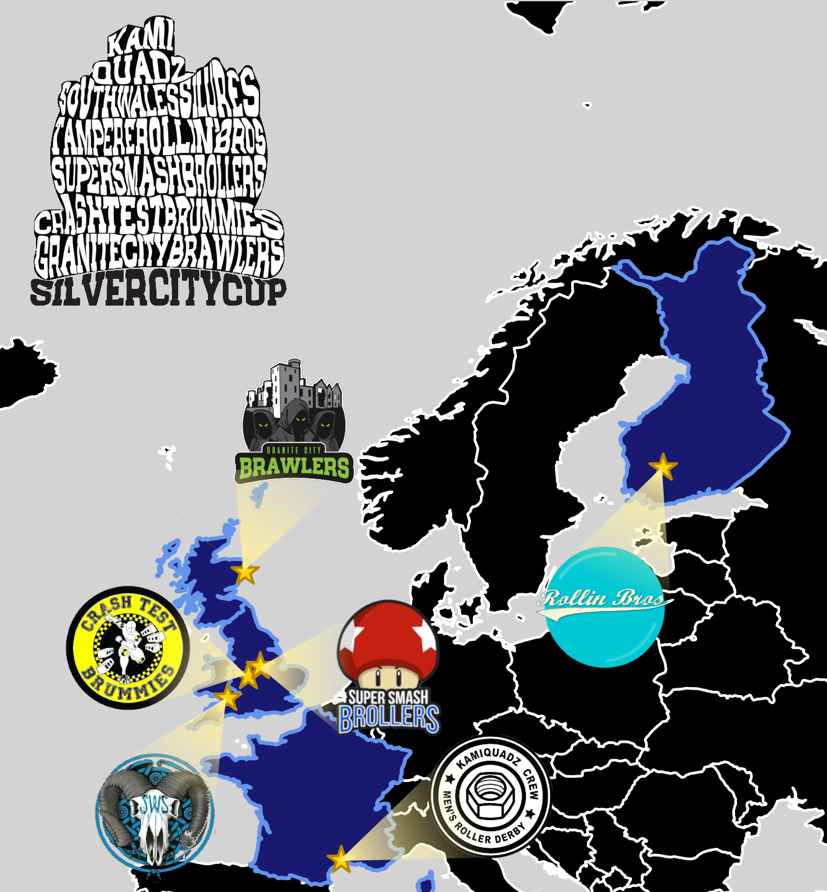
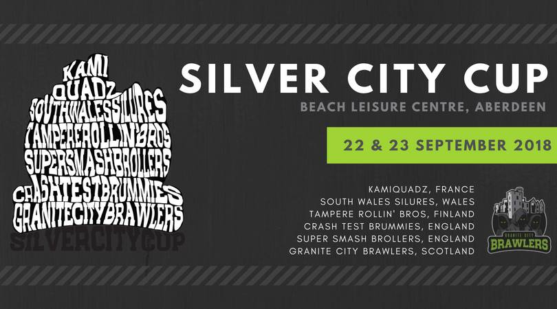
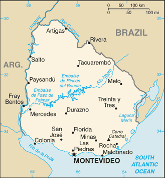
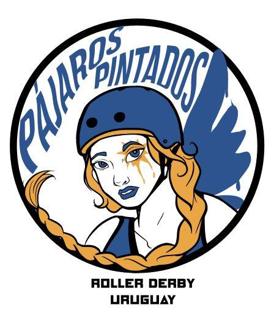
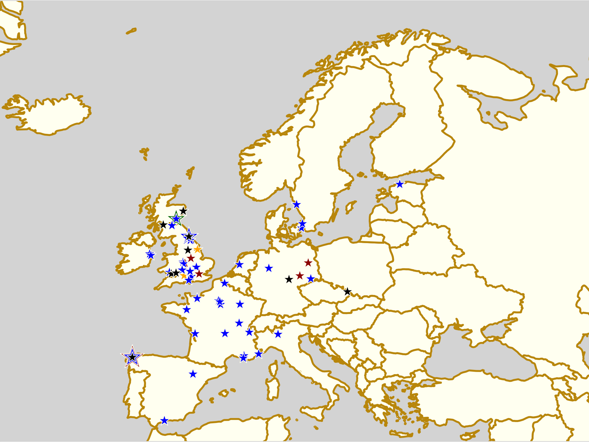

The Silver City Cup: Scotland's first MRDA Tournament
It would be remiss of us to run a series on Tournaments which deserve more attention without covering Scotland's own example of this.
Whilst there have been many tournaments run in Scotland, there have been relatively fewer "Men's Derby" focussed events. Given the lack of MRDA member leagues in Scotland until almost a year ago, when Granite City Brawlers were accepted, it was also impossible for there to have been any "officially" sanctioned tournaments at all.
Now, though, with two MRDA member teams (Glasgow Men's Roller Derby having quietly unofficially joined a few months ago, in June, although only officially announced by MRDA this week), the time is right for an international Men's Roller Derby tournament, and where better than the home of the first MRDA members in the country, Aberdeen.
The Silver City Cup - named for the poetic description of Aberdeen as the "Silver City, with the Golden Sands", possibly dating to an early guide to the city* - will host 6 teams from across Europe, in a group+placement format.
When we reported on the Men's European Cup, we noted that several of the teams involved were also facing each other in other MRDA sanctioned events this year. Conversely, the Silver City Cup seems to have attracted all the teams who aren't appearing as much elsewhere... so this is a great opportunity to see some matchups you can't get elsewhere.

England: Super Smash Brollers (Nottingham), Crash Test Brummies (Birmingham) Finland: Tampere Rollin' Bros (Tampere) France: Kamiquadz (Montpellier) Scotland: Granite City Brawlers (Aberdeen) Wales: South Wales Silures (Cardiff)
Structure
| GROUP 1 | GROUP 2 |
| Granite City Brawlers [661]{2.94} | Crash Test Brummies [618]{2.92} |
| South Wales Silures [706]{3.24} | KamiQuads [737]{3.8} |
| Tampere Rollin' Bros [777]{2.9} | Super Smash Brollers [612]{2.5} |
| [FTS MRDA rating**]{SRDRank May 2018 rating} | |
Looking at Flat Track Stats' "MRDA" ratings (which are derived only from MRDA sanctioned games played by teams), there's a pretty wide spread in predicted strength across the groups - second-highest-rated contenders, DCCLM's Kamiquadz are expected to beat lowest-rated contenders, Super Smash Brollers, by around a three-to-one points ratio! Ironically, the hosts have given themselves the harder of the two groups, based on prediction: they will be playing FTS' 1st and 3rd ranked teams of the tournament, as FTS' 4th ranked team themselves. In order to achieve their "rightful" position, they'd need to defeat the fearsome SWS in their group, before taking on the 2nd place team from Group 2.
Looking at pure history, rather than ratings, the Kamiquadz are really the wildcards here. Most of their past bouts on record are, understandably, given the geography, against French men's teams, or teams from nearby Barcelona in Spain. As far as we can tell from their FTS record, the Kamiquadz have never played outside of mainland Europe before, so this will be a big change for them - the weather in Aberdeen will be a bit of a change to Montpellier! On the basis of their performances in France, however, we have no hesitation in considering them the favourites to take the 1st place in this tournament overall.
Only slightly less of an historical wildcard for the other teams, Tampere Rollin Bros actually did play the Kamiquadz - way back in 2015 - but also have a more extensive set of travel experiences under their belts (being based in Finland forces that upon you, to some extent). In recent years, Tampere's bouts have not been MRDA-sanctioned (according to FTS), and so have not factored into their estimated strength*** - we'd actually say Tampere are somewhat overranked at present, going by their performance in their last tournament in 2017. [On the other hand, that tournament was in Barcelona, one of the most distant places Tampere have played, so it almost certainly represents a lowest bound on their expected strength at the time.] The SRDRank ratings, which do include those games from 2017, tend to agree, placing Tampere in the same "closely-competitive" group as the rest of the field excluding KamiQuads and SWS.
Of the UK based teams, Wales's South Wales Silures have had the strongest, year to date, although far from the busiest. Despite losing 2 of their three games in May (to Manneken Beasts, and, by 2 points only!, Gothenburg Salty Seamen), their incredibly strong first game performance against the Crash Test Brummies has kept their overall performance estimate high.
The aforementioned Brummies have, along with Nottingham's Super Smash Brollers, been extremely busy this year - with fixtures in British Champs MRDA-side (Tier 1 for the Brummies, and 2 for the Brollers) at the start of the year, and MRDA Qualifiers for the Super Smash Brollers as well. Fittingly, perhaps, the most recent bout for the two teams to date is against each other, a narrowish win for the higher-rated Brummies (162 to 199). The two teams will get to repeat that match-up again in their Group 2 bouts, almost certainly deciding which plays for 3rd and which for 5th overall in the tournament.
Finally, the hosts, Granite City Brawlers, have been stepping on the gas in terms of bout scheduling since getting MRDA membership - meeting the activity requirements to be ranked in the official rankings is a strong incentive for all members of official governing bodies. They, also, have played one of the other contenders most recently: a repeat matchup with the Super Smash Brollers resulting in a second win in a row for the Aberdeen team. FTS's MRDA rating for them, based on their past 4 games, is still trending upward, but it's not clear if it is "really" above the 700-odd mark needed to beat the Silures in their group - however, if Tampere really is as overranked as we think, the Brawlers may only need to be slightly stronger than they're currently rated to be to take their groups' 2nd place spot, and play for a likely 3rd overall.
The Silver City Cup will be held at The Beach Leisure Centre, Aberdeen; 22-23 September. Event page: https://www.facebook.com/events/616684768693015/ Tickets are available from Brown Paper Tickets: https://www.brownpapertickets.com/event/3446103
The "Silver" here is generally considered a reference to the "silver darlings", the herring which formed the basis of Aberdeen's historic fishing industry. Flat Track Stats' MRDA Rating as of 9/4/18 [http://flattrackstats.com/rankings/mrda/] Only two of Tampere Rollin Bros' bouts are listed as MRDA Sanctioned, both in 2016, and those are the only source for FTS's MRDA rating for them.
Non-US/Canadian Derby Roundup: 15th/16th September Edition
Predictions of bouts are from FTS, if possible, and from our own SRD Rank where FTS cannot make predictions (for example: Latin America, or non-MRDA men’s bouts). (SRDRank also has recent WFTDA rankings, including the 31st June ranking, as well as SRDRank, and allows you to make predictions from them.)
If we’ve missed you from our roundup, please let us know! [Or add yourselves to FTS and/or Derbylisting]
(Note: we're especially likely to be missing items this week, as Facebook's response to the Cambridge Analytica scandal has resulted in them turning off large parts of the services we use to automatically collate events for this article. We don't think we've missed too much, but...)We're trying a new colour coding this week, to differentiate BOUTS from RECRUITMENTS and OPEN SCRIMs, and BOOTCAMPs.

Scotland
Glasgow's Mean City host the only public bout in Scotland this weekend - although Granite City are down in England playing for Promotion in British Champs! If you're still up in Scotland on Sunday, you can also learn more about speed and aggression at ARRG's next bootcamp.- Thurs, Dumbarton: Chicks in Bowls Scotland host Quad Meet sessions [6-10pm, Unit23 Skatepark][EVENT]
- Fri, Dundee: Dundee Roller Derby host their regular open scrim session for the month, but 2 weeks early, - and this one is Open To All genders. [EVENT]
-
Glasgow: Mean City Roller Derby host their next bout for their all-gender aligned team, as a double-header event [EVENT]
- Junior Derby Exhibition: Rollerstop Rebels versus Rollerstop Reckers
- Mean City Roller Derby (All Gender) versus Inverness City Roller Derby [FTS]
- Sun, Aberdeen: Chicks in Bowls Scotland host a Sunday Skate followed by a park skate outside [Transition Extreme Sports] [EVENT]
- Sun, Dumbarton: Chicks in Bowls Scotland host all-ages coaching for Ramps and Bowls skating [10am-midday, Unit23 Skatepark?]
- Sun, Edinburgh: Auld Reekie Roller Girls host another edition of their fortnightly Summer Skate Skills mini-bootcamps for just-about-pre-mins skaters. This edition focusses on speed, accuracy and aggression - taking hits, counterblocking and falls . Open to WFTDA-gender-policy conforming skaters. [EVENT]
- Tues, Aberdeen: Chicks in Bowls Scotland host a regular Quad Meet (Transition Extreme) [EVENT]
United Kingdom
British Champs Playoffs are here, in their new for 2018 venue in Stoke on Trent! As well as that big weekend fixture, there's a bunch of other derby across the country, including double headers in Grimsby, Oxford and Guildford (the latter for charity!), and a charity skate marathon in Leicester.- Fri, London, England: London Rollergirls host a "Back To School" quiz [EVENT]
- Fri, Milton Keynes, England: The Concrete Cows are hosting a free "try Roller Derby session" for anyone interested in the sport, as either a skater or an official of any kind [EVENT]
- Fri, Nottingham, England: Nottingham Hellfire Harlots host "Harlot Fest", a live music+poetry Charity Fundraiser, representing female and queer artists. Money raised goes to the Hellfire Harlots and to Nottingham Women's Centre [EVENT]
- Basingstoke, England: Basingstoke Bullets Roller Derby continue their intake.. month [EVENT]
- Bradford, England: Rule56 host another of their Bite-Sized Bootcamp mini-workshops, this time focussing on Bridging (and walls and reforming) [EVENT]
- Leeds, England: Double Threat Skates are up North again for their monthly pop-up shop hosted by Leeds Roller Derby ! [EVENT]
- Lincoln, England: Lincolnshire Bombers Roller Derby host their open free taster session of Derby, for any interested potential recruits. Open to all ages and genders (Lincolnshire Bombinos can take all junior skaters) [EVENT]
- Portsmouth, England: Portsmouth Roller Wenches are turning out to Portsmouth Pride this weekend! [EVENT]
- Sat+Sun, Stoke-on-Trent, England: The final fixture of the British Championships 2018 season is upon us, as the Playoffs for promotion from WFTDA Tier 2, 3 and MRDA Tier-3 arrive. [FTS Tournaments: T3W T2W T3M][EVENT]
- Whippin' Hinnies (Newcastle B) versus Hull's Angels [T3W]
- Nottingham versus Granite City (Aberdeen) [T3W]
- Cambridge versus Riot City Ravens (Newport) [T3W]
- North Wales versus Wiltshire [T3W]
- Bristol Men's versus Kent Men's [T3M]
- Rebellion versus Royal Windsor [T2W]
- Dorset Knobs versus North Wales (Men) [T3M]
- Batter C Power (London C) versus Norfolk Broads [T2W]
- (then elimination bracket descent on Sunday)
- Sun, Grimsby, England: The Grim Reavers and Brothers Grim co-host a double header of Roller Derby [EVENT]
- Sun, Guildford, England: Surrey Roller Girls host some charity Roller Derby - a Roald Dahl themed bout raising funds for Roald Dahl's Marvellous Children's Charity [EVENT]
- WFTDA-gender policy open subs game
- Surrey Roller Girls versus London Rockin Rollers Badasses (London B) [FTS]
- Sun, Leicester, England: Roller Derby Leicester hosts a Skate Marathon for The Clare Lawrence Foundation - a charity founded in honour of RDL skater Sweetabix, funding research into prevention of brain tumours [EVENT]
- Sun, Manchester, England: Manchester Roller Derby host one of their regular Mixed level, open scrims, open to all genders [EVENT]
- Sun, Oldham, England: Rainy City Roller Derby host their first Jammer Bootcamp of the year, with 4 of their top jammers leading sessions on all aspects of jamming techniques [EVENT]
- Sun, Oxford, England: Oxford Wheels of Gory host a double header of roller derby, with an event for each one... [EVENT 1][EVENT 2]
- Rookie skaters open-subs bout: Sunnydale Slayers versus Bayside Kelly Kapowskis
- Oxford Wheels of Gory versus Severn Roller Torrent (Severn Valley) [FTS]
- Mon, Peterborough, England: Borderland Brawlers Roller Derby continue their series of New Skater Intake sessions, Open To All genders [EVENT]
- Tues, RAF Lakenheath, England: the Red White and Bruise Rollers host an open info day and recruitment [EVENT]
- Tues, Truro, England: Kernow Krakens are hosting a series of "Fresh meat" try-derby sessions ahead of their postponed 12 week intro to derby course (in November) [EVENT Flyer]
- Wed, Eastbourne, England: Eastbourne Roller Derby hosts an open scrimmage, Open to All Genders. (Scrim run with alternating Juniors/Womens/Mens rotation) [EVENT]
- Wed, Sunderland, England: Sunderland Roller Derby League's weekly taster sessions for potential recruits continue [EVENT]
Europe
Whilst there's a lot of recruitment across Europe, there's also plenty of bouts - Manneken Beasts host their weekend tournament September Stoemp, Germany hosts several more Bundesliga fixtures, Dijon host a triple header of all kinds of derby, Iceland sees a visit from Texas, Limerick play Dublin... and Barcelona hosts both the Skate Love skating festival, and some international Derby on Sunday!- Wed+Fri, Lens, France: Les Gueules Noires are recruiting, with training sessions on Wed + Fri [EVENT Flyer]
- Wed, Palermo, Italy: The Poison Kittens host their Fresh Meat Day for all new recruits [EVENT]
- Wed+Fri, Rimini, Italy: The Stray Beez training sessions start in earnest, still open to people signing up! [EVENT Flyer]
- Wed, Bodø, Norway: Bodø Roller Derby host the second of two open training sessions for potential new recruits [EVENT]
- Thurs, Dijon, France: the Velvet Owls + the Raclee's regular open Thursday sessions continue [EVENT]
- Thurs, Grenoble, France: The Cannibal Marmots' open recruitment sessions continue for interested skaters or officials [EVENT]
- Thurs, Valence, France: The Red Valentines Revenge host their recruitment eventing for interested skaters [EVENT]
- Thurs, Rimini, Italy: the Stray Beez are joining sports club Rollerverucchio to play a bit of Street Hockey on the beach! [EVENT]
- Fri+Mon, Tallinn, Estonia: Tallinn Roller Derby, Estonia's second Roller Derby league, have open training at both ends of the week [EVENT (Friday)][EVENT (Monday)]
- Fri+Mon, Tartu, Estonia: Tartu Roller Derby, Estonia's first Roller Derby league, are opening their regular training sessions for new recruits (or potential recruits who want to see what it's like before committing) [EVENT (Friday)][EVENT (Monday)]
- Fri+Mon, Blanzy, France: Roller Derby Bassin Minier hosts recruitments across their training sessions for those interested in joining. [EVENT Flyer]
- Fri, Carvin, France: Les Gueuzes DéTRACKées are starting up their new season, and open for new recruits on Friday [EVENT Flyer]
- Fri, Clermont-Ferrand, France: The Auver'Niaks' Juniors recruitments continue weekly [EVENT Flyer]
- Fri, Vannes, France: Les V'hermines host their open signup evening, for anyone wanting to find out more about the sport - includes buffet! [EVENT]
- Fri-Sat, Barcelona, Spain: The 2018 edition of Skate Love Barcelona - the International Skate Music Festival is this weekend, and will be bringing skaters from across Europe, including derby people. (We know Roller Derby Sofia will be in attendance, all the way from Bulgaria!) [EVENT]
- Fri+Wed+Mon, Malaga, Spain: Las Judas Roller Derby's training sessions are semi-open to new recruits, as their recruitment season starts in September. Message them to let them know! [EVENT Flyer]
- Sat-Sun, Braine-le-Comte, Belgium: Manneken Beasts host the 2018 September Stoemp, their annual international derby event. [FTS tournament][EVENT]
- Sat:
- Manneken Beasts (Brussels M) versus Les Menneles (Strasbourg M)
- Manneken Beasts versus Mons'ter Munch Derby Dudes (Mons M)
- Les Menneles versus Mons'ter Munch Derby Dudes
- Sun:
- Bootcamp run by Track Vader and Trick or Threat
- Mixed Scrimmage
- Manneken Beasts versus The World (open subs team)
- Sat:
- Aurillac, France: The Pintades Killers (Roller Derby Aurillacoise) host a triple set of events this Saturday:
- Avignon, France: The Rabbit Skulls recruitment series continues, with an intake day [EVENT]
- Dijon, France: The Velvet Owls host a Roller Disco to celebrate the start of a new term and season [EVENT]
- Marseille, France: Marseille Roller Derby Club returns for a new season with an evening event of recruitment and introductions [EVENT]
- Paris, France: Paris Rollergirls host their recruitment date for this season! [EVENT]
- Villejuif, France: The Badass Ladies are attending the Villejuif Forum de la Rentrée, with a stall to answer all questions from interested people. [EVENT]
- Erfurt, Germany: Roller Derby Erfurt are co-hosting a Saturday Night Fever themed Roller Disco [EVENT]
-
Hamburg, Germany: Harbor Girls Hamburg host a double header of Derby bouts against Berlin's finest, including a Bundesliga division 1 bout [FTS Tournament][EVENT]
- Harbor Girls A (Hamburg A) versus Inglorious Basterds (Berlin B) [Bundesliga D 1]
- Harbor Girls B versus Breaking Bears [FTS]
- Ludwigsburg, Germany: Barockcity Roller Derby are celebrating their 11th birthday with a double session of Open-To-All genders scrimmages [EVENT]
- Münich, Germany: Munich Rolling Rebels host a full-day training camp run by the BRIV (Bavarian Roller Skating + Blading Federation). [EVENT]
-
Reykjavík, Iceland: Roller Derby Iceland's Ragnarök host another international bout! [EVENT]
- Ragnarök (Iceland) versus Honky Tonk Heartbreakers (Texas home team) [FTS]
-
Limerick, Ireland: Limerick Roller Derby host a double header of derby [EVENT]
- open pickup game
- Limerick Roller Derby versus Dublin Roller Derby B [FTS]
- Waterford, Ireland: Waterford ViQueens Roller Derby host the first of three try derby days [EVENT]
- Schwarzenbach, Italy: the Alp'n Rockets host a Roller Derby Open Day for any interested people to find out more about the sport. [EVENT]
- A Coruña, Spain: As Brigantias Roller Derby complete their series of events around WFTDA Playoffs, with a weekend Summer Camp open to all interested potential skaters [EVENT]
- Borås, Sweden: Stitch City Rollers host their final tryouts for the year, followed by an open training session for interested attendees [EVENT]
- Sun, Gent, Belgium: GO-GO Gent Roller Derby host an Open Skate Day, for any interested people to find out more about the sport (and maybe sign up) [EVENT]
- Sun, Dijon, France: The Velvet Owls follow up their roller disco with a triple header of Roller derby bouts! [EVENT]
- La Raclée (Dijon M) versus Unnamed Basterds (open subs M team)
- Velvet Must'Hard (Dijon B) versus Les Flèches Revêches (Dijon AMsports) [FTS]
- Velvet Owls (Dijon A) versus "mystery team"
- Sun, Orléans, France: the second of three recruitment sessions hosted by Orléans Roller Derby is today (the next two on subsequent Sundays) [EVENT]
- Sun, Saintes, France: The Holy Terrors host the second of three intake and try-derby days this season [EVENT]
- Sun, Mühlenberg, Germany: Hannover's Demolition Derby Dolls host a single bout of derby, a Bundesliga division 2 game [FTS tournament][EVENT]
- Demolition Derby Dolls (Hannover) versus Bashlorettes (Kassel) [Bundesliga D 2]
- Sun, Münich, Germany: After their bout the previous day, the Rolling Rebels host an open training day for any interested potential skaters to see what the sport is like for themselves [EVENT]
- Sun, Barcelona, Spain: After the end of Skate Love Barcelona, there's still skating action, as Spankalot Rollerderby Events brings Battle of the Beasts to southern Spain. [FTS tournament][EVENT]
- Sun, Malmö, Sweden: Crime City Rollers return from making it to WFTDA Champs to host the second of two intake/try derby days for both skaters and officials (on and off skates) [EVENT]
- Mon, Linz, Austria: Steelcity Rollers host their recruitment day for the autumn, for any new skaters or officials to sign up [EVENT]
- Mon, Clermont-Ferrand, France: The Auver'Niaks' Adult recruitments continue weekly [EVENT Flyer]
- Mon, Saint Dizier, France: We think Roller Derby Saint Dizier's open recruitment days continue this day... [EVENT Flyer]
- Mon, Florence, Italy: The Bone Choppers of Roller Derby Firenze host their open recruitment day [contact in advance for info] [EVENT Flyer]
- Mon, Breda, Netherlands: Suck City Rock'n Roller Dolls host the first of two Open Training sessions to let interested potential recruits see the sport (before recruitment in October) [EVENT]
- Mon, Trondheim, Norway: Nidaros Roller Derby host the second of two open training sessions for anyone interested in trying the sport [EVENT]
- Mon, Badalona, Spain: Roller Derby Badalona host their recruitment session for the new season [EVENT]
- Tues, Kokkola, Finland: Kokkola Roller Derby host the start of this season's Beginner's Course for new recruits [EVENT]
- Tues, Auxerre, France: Les K.O'n'Ass Roller Derby Auxerre are hosting their recruitment / open training sessions every Tuesday this month. [EVENT Flyer]
- Tues, Belfort, France: the Knee Breakers on Wheels host the first of three Recruitment sessions for interested skaters and officials (the second two are Thursday and Sunday) [EVENT]
- Tues (and Thurs), Reykjavík, Iceland: Roller Derby Iceland are recruiting, with a pair of open sessions for interested skaters to learn about the sport [EVENT]
- Tues, Waterford, Ireland: Southland Sirens Roller Derby host a free open night for any interested potential members to try things out. Open to All Genders. [EVENT]
- Tues, Enschede, Netherlands: Roller Derby Twente host the second of two "Roller Derby for Beginners" / Fresh Meat Days for interested potential skaters [EVENT]
- Wed, Ostrava, Czech Republic: Trojhali Ostrava Roller Derby host their ongoing recruitment / open training for the next few months on Wednesdays! [EVENT]
- Wed, Rochefort, France: Dirty Pussy Roller Derby host the last of three recruitment / intro sessions [EVENT]


Pacific
Roller Derby continues to happen busily in the Pacific region - the Roller Derby Open Season meets its grand final, whilst New Zealand sees both Top 10 champs bouts, and a triple header!- Wed, Wodonga, VIC, Australia: Murray River Derby Dames host an info session for anyone interested in finding out more about Roller Derby. Interested officials, and juniors skaters, also welcome [EVENT]
- Thurs, Bendigo, VIC, Australia: Dragon City Roller Derby host a fundraising dinner out (for league friends and family) to support their two members who made the Team Victoria regional roster for the first Australian National Championships. [EVENT]
- Fri, Wollongong, NSW, Australia: WIRD - Wollongong Illawarra Roller Derby - host an info session for interested potential skaters or officials, and a chance to sign up to their 8 week beginners' course [EVENT]
- Fri, Bairnsdale, VIC, Australia: The Bairnsdale sessions for Gippsland Lakes Roller Derby's intro to Roller Derby programme for female juniors (13 to 17) continues. [EVENT]
- Fri, Preston, VIC, Australia: Victorian Roller Derby League's Social Skates continue, open to all skaters [EVENT]
- Fri, Tokyo, Japan: Kamikaze Badass Roller Derby Tokyo have regular training on Fridays, which new skaters are always welcome to [EVENT Flyer]
-
Canberra, ACT, Australia: Canberra Roller Derby League host the 5th game in their home teams series 2018 [EVENT]
- Black 'n' Blue Belles versus Red Bellied Black Hearts
-
Mansfield, QLD, Australia: We're at the Grand Final of the 2018 Roller Derby Open Season, which is a slightly shorter day than the group rounds before it. [FTS tournament] [EVENT]
- "Men's match" exhibition
- Division 2 3rd Place Game
- Division 2 1st Place Game
- Division 1 1st Place Game
- Adelaide, SA, Australia: Rockabellas Roller Derby League host a "Rockabilly Fundraiser Quiz Night", with a 50s Rockabilly/Pinup theme. [EVENT]
- Launceston, TAS, Australia: Devil State Derby League host a fundraising fancy dress (comic book theme) Roller Disco! [EVENT]
- Delacombe, VIC, Australia: Ballarat Roller Derby Association, and Ballarat YMCA, co-host a "YMCA Fun Skate" [EVENT]
- Langwarrin, VIC, Australia: Mornington Peninsula Roller Derby Club host a fundraising Trivia Night [EVENT]
- Dunedin, New Zealand: Dunedin Derby hosts a fundraising Roller Disco, with a "royalty" theme [EVENT]
-
Wanganui, New Zealand: West Coast Bombers host a triple header of Roller Derby action [EVENT]
- OTA game: West Coast Bombers Mixed Gender versus SCRD Mash-up [FTS?]
- WFTDA-gender game: Stealth Bombers (WCB B) versus Twisted Sisters (Brisbane City Rollers B) [FTS]
- MRDA-gender game: New Zealand Men's Roller Derby (development team) versus West Coast Bombers Men [FTS?]
-
Wellington, New Zealand: Richter City Roller Derby host a double header of derby bouts, including a New Zealand Top 10 Champs bout [FTS tournament][EVENT]
- Convicts (Richter City / Wellington B) versus Dead End Derby B (Christchurch) [FTS]
- All Stars (Richter City / Wellington A) versus Whakatane Roller Derby League [Top 10 Champs]
- Sun, Katoomba, NSW, Australia: Blue Mountains Roller Derby League host Game of Skates, a double-header of Thrones-themed derby [EVENT]
- Three-Eyed Ravens versus Direwolves (juniors bout)
- Night's Watch versus White Walkers (WFTDA-gender game)
- Sun, West Footscray, VIC, Australia: WestSide Derby Dollz host their regular Sunday of Scrimmages triple-open-scrim event [EVENT]
- Juniors Scrimmage
- Red (no contact) Scrimmage
- Amber (low contact) and Green (full contact) Scrimmage
- Sun, Wanganui, New Zealand: After playing West Coast Bombers on Sat, New Zealand Men's Roller Derby host an open-to-all all-gender training session [EVENT]
- Mon, Delacombe, VIC, Australia: Ballarat Roller Derby League host the start of their 8 week Roller Derby For Beginners course [EVENT]
- Mon, Preston, VIC, Australia: Victorian Roller Derby League host their (postponed) start to the new seasons Learn To Skate 10 week program! [EVENT]
- Tues, Sale, VIC, Australia: Gippsland Lakes Roller Derby host the next Sale-hosted edition of their summer roller derby course for juniors (female, 13-17) [EVENT]
- Wed, Bangkok, Thailand: Bangkok Roller Derby have their regular training evening, which is always open to new skaters [EVENT Flyer]

Latin America
As usual, for Latin America, this is what we can find in the area - we always appreciate help in finding events here. This weekend, there's derby across the continent as usual, with Cancún hosting a triple header round robin, Argentina hosting parties and double headers, Bogotá's 5th District Tournament final, and even some derby in Peru!- Thurs+Sat+Tues, Tigre, Argentina: Bastardas Roller Derby Tigre are holding open training sessions (let them know if you're turning up for the first time!) [EVENT Flyer]
- Thurs+Sat+Tues, Salta, Argentina: Malditas Lisiadas Roller Derby host their ongoing recruitment at all their sessions [EVENT Flyer]
- Thurs+Mon+Wed, La Plata, Buenos Aires, Argentina: La Dinastía Roller Derby host their ongoing recruitment too, with training on those weekdays [EVENT Flyer]
- Fri+Mon,+Wed, Mar del Plata, Argentina: Rebeldes del Asfalto are having open training sessions (let them know if you're going to turn up!) [EVENT Flyer]
- Buenos Aires, Argentina: the Dirty Fucking Dolls host a late-night party event on the south side of Buenos Aires [EVENT]
- Piracicaba, Brazil: the Capivaras celebrate their 2nd Birthday with an 80s themed party [EVENT]
- Cancún, Mexico: Reinas Rojas Roller Derby host a triple-header round-robin tournament, the second Copa Del Caribe! [EVENT Flyer]
- Sun, Buenos Aires, Argentina: Sailor City Rollers return from WFTDA Playoffs in Spain to host a double header of Roller Derby [EVENT]
- Sun, Bogotá, Colombia: The final of the 5th District Tournament arrives this Sunday, with very little detail currently published. The winners of the District Tournament will go through to the Colombian National Tournament later in the year, as we wrote about here. [FTS tournament][EVENT]
- Bogotá Bone Breakers versus Central Derby D.C.
- Rock N Roller Queens versus Combativas Revoltosas
- 3rd Place (losers of above games), 1st Place (winners)
- Sun, Lima, Peru: Toxic Lima Roller Derby host a bit of home teams derby for spring [EVENT]
- Terror de la Selva versus Furia Marina (home teams)
- Sun, Montevideo, Uruguay: Pájaros Pintados Roller Derby, the first roller derby team in Uruguay, hosts a recruitment evening for interested skaters [EVENT]
- Mon+Wed+Fri, Montevideo, Uruguay: Tempestad Roller Derby - the second Roller Derby team in Uruguay - host recruitments on the training days [EVENT Flyer]
- Wed, Miramar, Buenos Aires, Argentina: Atlántico Sur Roller Derby host a training session (always open to new skaters) [EVENT Flyer]


Africa and Middle East
Our regular events in South Africa, Dubai and Abu Dhabi continue.- Thurs, Pretoria, South Africa: P-Town Roller Derby's weekly funskate open-skating events continue, with the chance to meet+sign up with the team [EVENT]
- Thurs, Abu Dhabi, United Arab Emirates: Chicks in Bowls UAE are hosting an event for everyone on wheels - roller skaters through skateboarders to get together [EVENT Flyer]
- Sat+Mon, Dubai, United Arab Emirates: Dubai Roller Derby hold their usual practice sessions (which we think are open to interested new skaters, on prior request) [EVENT]
- Sun+Tues, Abu Dhabi, Emirate of Abu Dhabi: Abu Dhabi Roller Derby's recruitment season starts, with their practices open to new skaters who want to try the sport [EVENT Flyer]
Elsewhere
- Fri-Sun, Longmont,CO, USA : Of interest to us because of the attendance of Victorian Roller Derby League, the 2018 Thin Air Throwdown is a 4 team WFTDA B level tournament, with some bonus WFTDA Division 1 game as well. Of particular interest, this will see current and former WFTDA champions Victoria and Rose play each other for the first time since 2017's WFTDA Championships final! [FTS Tournament][EVENT]
- Victorian Roller Derby League (Preston, VIC) versus Denver Roller Derby
- Victorian Roller Derby League versus Rose City Rollers
Silver City Cup - A Brawling Interview
 Photo by: Len Rizzo
Photo by: Len Rizzo
Straight off the bat, tell us how this tournament came about?
We joined the MRDA last September and as part of this the team is required to play 5 sanctioned games a year in order to gain ranking. The bigger teams can get their games quite easily in a tournament weekend through Champs and Playoffs, however there wasn’t much opportunity for the lower seeded teams. So we put our organisational heads together and decided to put on a tournament weekend for those below 40 or unranked in the MRDA. This allows 6 teams (including Brawlers) to gain 3 of their games in a single weekend!
How does it feel to be able to host/create the first MRDA tournament in Scotland as well as it having quite the international flavour to it?
We are over the moon at having 6 teams coming from 5 countries to our little tournament in Aberdeen. We even been working with some local bodies to promote the tournament and the city. VisitAberdeenshire have even put together a web portal (https://www.visitabdn.com/cp/silver-city-cup) full of information to help our tourist friends. A lot of people see Aberdeen as this grey city with not much going on but there is such a history to it! Three top things to check out on your visit would be Dunnottar Castle (for the Game of Thrones fans), Footdee (a small area of quirky houses, 5 minutes from the venue) and Slains Castle (the backdrop of our fab logo, you might even see one of the ghouls).
As for this being the first MRDA tournament in Scotland we are delighted to showcase to the rest of our international association just what Scotland has to offer and that we can put on one hell of a tournament!
I think we all want to know, how do you think GCB will fair given the tough competitors and the grueling nature of a tournament?
This is GCB’s first ever tournament and as such we’re going to need to bring our A game up against some tough opponents! With a few Scotland skaters at the helm, we have some tournament experience that will hopefully help the rest of the team prepare mentally and physically. We’ll be aiming for the win and to keep the Silver City Cup in the Silver City but every team has a good chance of taking that trophy home, the very nature of a tournament weekend is that anything could happen!
You say you’ve been preparing for the tournament, how have you done this?
Last month we hosted a double scrim with skaters from almost every league in Scotland. This allowed us to prepare for back to back games against some high level skaters.
We also have our weekly outdoor fitness sessions with Intrepid PT, these have worked doubly as both exercise and team bonding. Though its been a year and we all still hate burpees!
Should the tournament fair well, could we be seeing an annual Silver City Cup?
Ask me when its over! Maybe not an annual tournament in Aberdeen but we’d love to see a division two type structure appear within the MRDA as it continues to grow. Obviously our end goal is MRDA Champs but that’s a few years away yet!
Any final words that you would like to share with us?
We really want to put on a good tournament, representing all of Scotland and we’d love a big Scottish home crowd behind us – get your tickets now - https://www.brownpapertickets.com/event/3446103
Some inspiring words from Granite City Brawlers own, Pudz. From the sounds of it, this will be an exciting weekend of roller derby so make sure you get your tickets and be a part of Scottish history on September 22-23 at the Beach Leisure Centre in Aberdeen! You can check out further information at https://www.facebook.com/events/616684768693015/

Article written by Brawlers correspondent HaJuken.
Big Blether 2: Mean City host the return of the Scottish Derby community meetup.
Last year, the Scottish Roller Derby Community made a bit of history, by finally getting together in one place for a Big Blether. This wasn't just a disorganised chat, of course: this was the first ever Roller Derby Conference for Scottish derby, on the model of the European "EROC". On the 7th of October 2017, the vast majority of active Scottish leagues were represented by pairs of delegates [and all but one of those who couldn't make it sent statements by proxy], actively engaged in process.

Whilst the first Big Blether was the brainchild of Auld Reekie Roller Girls' Crazylegs and Skinner, and Glasgow Roller Derby's Head Referee, Candy Moho, it was also agreed that future convocations would pass the torch onto other leagues around the country, spreading the democratic work.
So, as it goes, the first volunteers to do the hard thing of repeating previous success were Glasgow's All-Gender league, Mean City Roller Derby. Very slightly more than a year later, their iteration of the conference, Big Blether 2, is coming to central Glasgow on the 20th October.
The principal task of a repeat convention is more nuanced than that of a first meeting. The first Big Blether did great things in generating conversation; in spreading knowledge [we personally enjoyed the group discussion elements, and how well they were orchestrated] and sharing problems. More importantly, it generated actions - foci for future progress and development, mutually agreed by all those present. (It also gained Scottish derby a little bit of publicity, via an article in Five On Five magazine).
The second Big Blether will have the equally hard task of looking at those actions, a year later, and seeing what has been done, what has not; correcting course, potentially, or pushing forward.
So, it might do us well to look at what actions the first Big Blether produced, across the multiple sessions it held (these were scheduled as pairs of parallel sessions, run as facilitated group discussions):
The session on Scottish Roller Derby Oversight spread some useful information (and quashed some misapprehensions) about the existing governance structures in Roller Derby. The action produced was to develop a "Scottish Derby Lobbying Group" to provide a unified voice for the Scottish community in representing our needs and desires to larger entities. We followed up on this, and believe that at least some work was done towards this aim, but as yet there is no formal group.
The session on Game Scheduling produced some frank discussion between leagues about competition for resources; the low ratio of leagues to halls and fans (as well as to officials), the network effects which mean that smaller leagues can be accidentally outcompeted by older, more established clubs, and so on. The actions for this session were to more strongly adopt the shared Scottish Roller Derby Schedule for scheduling bouts and events (this common document is hosted on Google Docs, and made available via links in the Scottish Derby Facebook group) and to consider Sharing Fixtures with Other Leagues. We've seen use of the Schedule increase significantly since the first Big Blether, and there have been a number of "shared fixtures", so we think these actions have been broadly successful.
The session on Officiating involved some extensive discussions about the widespread issues of officials recruitment and training (and respect within leagues). The action for this session was to promote more central training and learning opportunities for Officials (on and off skates) - a Ref School to be run by Glasgow Roller Derby - and for leagues to work towards giving their officials a more "cohesive identity" to form around and generally treat them as first class citizens of the sport. The Glasgow Roller Derby Ref School has run a few sessions (and Dundee have continued to run their own series of Officiating bootcamps, extant before Big Blether); and the branding of several league's officials as their own "teams" seems to represent a start of the second action.
The session on Access to Scottish Derby revolved around the perennial issues of costs, access to halls and training certifications; as well as problems with providing kit, and burnout in "highly active" members of the community; and the less discussed issues with cultural homogeneity in derby. This session produced a lot of "personal actions" for leagues to Share More Resources, and investigate community Volunteering Schemes. It's difficult to measure how well this has been progressed without hearing from all the leagues - so this will be a point of discussion in October!
The meeting as a whole also produced actions to produce and maintain a Scottish Roller Derby Ranking, which would enable a Scottish Roller Derby National Tournament or Scottish League or Championships. These have progressed very slightly (there's an initial Scottish Derby Ranking derived from Flat Track Stats Europe ratings), but on the meat of the matter - an organised competitive structure - there's a lot of work to be done.
The second ever Big Blether will give those actioned a chance to report on their progress, as well as discussing any new topics which have developed in the past 12 months - since that year has seen three World Cups, a changing structure in other International Gameplay, and at least one new style of Roller Derby, we’re sure that there will be lots to talk about.
The 2nd Big Blether will be hosted on the 20th October 2018, in Glasgow Quakers Meeting House, Elmbank Crescent, Glasgow. G2 4PS. Final timings to be decided.
Teams can register representatives (as can independents) here: https://docs.google.com/forms/d/e/1FAIpQLSf5LLsKjK3egYsLrcJNX8vWnnoRV5DRErii42kKAsANWbbP-w/viewform REGISTRATION CLOSES 1 OCTOBER.
Anyone can contribute to the discussion topics on offer, and shape the schedule, via this form here: https://docs.google.com/forms/d/e/1FAIpQLSeiKb3UVcj1mKjVAeZmUVUY5krWkziPGH7HKCR4OQirmRKATQ/viewform
Non-US/Canadian Derby Roundup: 8th/9th September Edition
Predictions of bouts are from FTS, if possible, and from our own SRD Rank where FTS cannot make predictions (for example: Latin America, or non-MRDA men’s bouts). (SRDRank also has recent WFTDA rankings, including the 31st June ranking, as well as SRDRank, and allows you to make predictions from them.)
If we’ve missed you from our roundup, please let us know! [Or add yourselves to FTS and/or Derbylisting]
(Note: we're especially likely to be missing items this week, as Facebook's response to the Cambridge Analytica scandal has resulted in them turning off large parts of the services we use to automatically collate events for this article. We don't think we've missed too much, but...)We're trying a new colour coding this week, to differentiate BOUTS from RECRUITMENTS and OPEN SCRIMs, and BOOTCAMPs.

Scotland
Edinburgh (or, rather, Dalkeith) is the single host of bouts this weekend in Scotland - although there continues to be a lot of recruitment across the country.- Thurs, Dumbarton: Chicks in Bowls Scotland host Quad Meet sessions [6-10pm, Unit23 Skatepark][EVENT]
- Fri, Aberdeen: Granite City Brawlers host the first of two open evenings for interested new member. Open To All genders. [EVENT]
- Fri, Dundee: Dundee Roller Derby host the second of their Intake Open Nights for potential new recruits [EVENT]
- Edinburgh: Auld Reekie Roller Girls host another exciting high-level double header of Roller Derby [EVENT]
- Elgin: Helgin Roller Derby host another of their fundraising Bingo Nights [EVENT]
- Sun, Aberdeen: Chicks in Bowls Scotland host a Sunday Skate followed by a park skate outside [Transition Extreme Sports] [EVENT]
- Sun, Dumbarton: Chicks in Bowls Scotland host all-ages coaching for Ramps and Bowls skating [10am-midday, Unit23 Skatepark?]
- Sun, Edinburgh: Following their bouts the previous day, Auld Reekie Roller Girls host a Roller Derby Taster Day for anyone inspired to try the sport! [EVENT]
- Sun, Livingston: New Town Roller Girls also host their seasonal intake for interested new members, with their first of two sessions [EVENT]
- Mon, Aberdeen: Granite City Roller Derby Quiz Night returns in its end-of-month slot! [EVENT]
- Tues, Aberdeen: Chicks in Bowls Scotland host a regular Quad Meet (Transition Extreme) [EVENT]
United Kingdom
The "postseason" in the UK isn't quite here yet (British Champs Playoffs are still to come), and this is a pretty busy weekend, bout-wise. There's also a chance to learn to be offensive in Manchester; and a chance to learn to dance in Croydon!- Thurs, Leeds, England: Leeds Roller Derby's 12 week learn to derby course starts this week! [EVENT]
- Thurs, Flint, Wales: North Wales (Men's) Roller Derby host their regular monthly open scrim - open to anyone who is happy to play with a majority of men in a team [EVENT]
- Fri, Durham, England: Durham City Rolling Angels host their New Skater Intake sessions for this season, every Friday [EVENT]
- Fri, Wakefield, England: Wakey Wheeled Cats host their regular Friday Night Skate! Not derby, just skating. [EVENT]
- Basingstoke, England: Basingstoke Bullets Roller Derby continue their intake.. month [EVENT]
-
Ipswich, England: Suffolk Roller Derby host a double header for Summer [EVENT]
- Suffolk Roller Derby Women versus Hell's Belles (Hertfordshire) [FTS]
- Suffolk Roller Derby Men versus Gents in Pink (English Exhib) [FTS?]
-
Leeds, England: Leeds Roller Derby host a double header event [EVENT]
- All Gender "Pay to Play" bout - Merfolk versus Unicorns
- Leeds Roller Derby B versus Wirral Roller Derby [FTS]
- Manchester, England: New Wheeled Order host a 4 hour bootcamp with Omar Gherd, NWO coach, on effective offence - Be As Offensive as Omar! [EVENT]
-
Mansfield, England: Mansfield Roller Derby host a double header! [EVENT]
- Open To All genders mixed ability scrimmage
- Mansfield Roller Derby B versus Crucibelles (Sheffield Steel B) [FTS]
-
Oldham, England: Rainy City Roller Derby host a double header, featuring their D team, Rainy City Rising [EVENT]
- "Bowie versus Freddie" rookie skater open-subscription game, WFTDA-gender
- Rainy City Rising (Oldham D) versus The World (open subscription)
- Southampton, England: SC*R (Southampton City Rollers) host another of their semi-closed Scrim Party! events. (Invitation by messaging the right people) [EVENT]
-
Cardiff, Wales: Tiger Bay Brawlers host a single header [EVENT]
- Tiger Bay Brawlers versus Nottingham Hellfire Harlots [FTS]
- Sun, Croydon, England: Croydon Roller Derby host a crosstraining bootcamp on Roller Dance, lead by Jerry Attric [Leeds Roller Dolls, Leeds Roller Derby, Lincolnshire Rolling Thunder]. [EVENT]
- Sun, Hemel Hempstead, England: Hell's Belles Roller Girls / Hertfordshire Roller Derby host the start of their 13 week Learn To Play Roller Derby course for this season. [EVENT]
- Sun, Oldham, England: Rainy City Roller Derby also host another of their regular Pre-minimum Skills bootcamps, Open To All genders [EVENT]
- Sun, Penarth, Wales :South Wales Silures host their regular Open To All Scrimmage [EVENT]
- Mon, Peterborough, England: Borderland Brawlers Roller Derby host the start of a series of New Skater Intake sessions, Open To All genders [EVENT]
- Tues, Kingston upon Hull, England: Hull's Angels Roller Derby host another of their regular WFTDA-gender-policy guest skater nights [EVENT]
- Tues, Truro, England: Kernow Krakens are hosting a series of "Fresh meat" try-derby sessions ahead of their postponed 12 week intro to derby course (in November) [EVENT Flyer]
- Tues, Wallasey, England: Wirral Roller Derby + the Pack Animals (Wirral Men's Roller Derby) co-host an Open To All genders "New Skater Evening" for anyone interested in roller derby [EVENT]
- Tues, Dowlais, Wales: Merthyr Roller Derby host their first ever 6-week Beginners Course for new skaters! [EVENT]
- Wed, Sunderland, England: Sunderland Roller Derby League's weekly taster sessions for potential recruits continue [EVENT]
Europe
With WFTDA International Playoffs over, there's bouts outside of Spain again, with a burst of activity in the German Bundesliga, in particular. There's also one of our favourite concepts for a tournament returning for a third year, as raclette-meets-derby in Geneva!- Wed+Fri, Lens, France: Les Gueules Noires are recruiting, with training sessions on Wed + Fri - and this Wednesday their open session [EVENT Flyer]
- Wed, Rochefort, France: Dirty Pussy Roller Derby host one of three recruitment / intro sessions [EVENT]
- Wed-Sat, Waterford, Ireland: Waterford City ViQueens are hosting induction and intro to derby events every day from Wednesday to Saturday! [EVENT]
- Wed+Fri, Rimini, Italy: The Stray Beez training sessions start in earnest, still open to people signing up! [EVENT Flyer]
- Thurs, Dijon, France: the Velvet Owls + the Raclee's regular open Thursday sessions continue [EVENT]
- Thurs+Mon, Nice, France: Nice Roller Derby's ongoing recruitment and intro to derby evenings continue. [EVENT]
- Fri, Roskilde, Denmark: Roskilde Roller Derby host an Open Training session for potential new recruits [EVENT]
- Fri+Mon, Tartu, Estonia: Tartu Roller Derby, Estonia's first Roller Derby league, are opening their regular training sessions for new recruits (or potential recruits who want to see what it's like before committing) [EVENT (Friday)][EVENT (Monday)]
- Fri, Tampere, Finland: Tampere Roller Derby and Tampere Rollin' Bros host their last free taster session before their recruitment + training series starts for the new season [EVENT]
- Fri+Mon, Blanzy, France: Roller Derby Bassin Minier hosts recruitments across their training sessions for those interested in joining. [EVENT Flyer]
- Fri, Carvin, France: Les Gueuzes DéTRACKées are starting up their new season, and open for new recruits on Friday [EVENT Flyer]
- Fri, Clermont-Ferrand, France: The Auver'Niaks' Juniors recruitments continue weekly [EVENT Flyer]
- Fri, Lorient, France: Roller Derby Lorient have their tryouts for the new season! [EVENT Flyer]
- Fri, A Coruña, Spain: As Brigantias Roller Derby hold an outreach "Encounter" to promote and explain Roller Derby to a wider audience, building on the hosting of WFTDA Playoffs last weekend [EVENT]
- Fri+Wed+Mon, Malaga, Spain: Las Judas Roller Derby's training sessions are semi-open to new recruits, as their recruitment season starts in September. Message them to let them know! [EVENT Flyer]
- Fri, Gothenburg, Sweden: Dock City Rollers screen a showing of the movie "I Tonya", as part of their fundraising to attend the first ever WFTDA European Continental Cup in Birmingham [EVENT]
- Sat+Sun, Mons, Belgium: Mons'ter Munch Derby Dudes and Freaky Mons'ter Derby Ladies co-host an all-genders intro to Roller Derby, including a public scrim on the Sunday, for all interested potential recruits. [EVENT]
- Lappeenranta, Finland: Lpr HCRollers host their next tryouts / try derby events for interested potential members. [EVENT]
- Sat+Sun, Corsica, France: Roller Derby Club Bastiacciu host a "party" event as part of their recruitment / start of season training prep [EVENT Flyer]
- Sat+Wed, Lille, France: Lille Roller Girls host their ongoing series of Recruitment / try derby sessions [EVENT]
- Sat+Sun, Berlin, Germany: Chicks in Bowls Berlin co-host a series of Skate, Yoga and Handstand workshops, promoting strength and flexibility for skaters. [EVENT]
-
Dresden, Germany: Roller Derby Dresden host a double-header of Bundesliga Division 1 bouts! [FTS tournament][EVENT]
- Dresden Pioneers versus Bembel Town Rollergirls (Frankfurt)
- Dresden Pioneers versus RuhrPott Roller Girls (Essen)
-
Kaiserslauten, Germany: The Roller Girls of the Apocalypse host a single header Bundesliga Div 3 bout [FTS Tournament][EVENT]
- Roller Girls of the Apocalypse versus Roller Derby Erfurt
-
Münster, Germany: Zombie Rollergirlz Münster host a horrific single header, and Division 2 Bundesliga bout [FTS tournament] [EVENT]
- Zombie Rollergirlz versus Graveyard Queens (Cologne) [Bundesliga Div 2]
- Dublin, Ireland: Dublin Roller Derby host a "Frock 'n' Roll" pop-up clothes swap event, raising fungs for Homeless Period Ireland and Dublin Rape Crisis Centre [EVENT]
- Sat+Sun, Bergamo, Italy: The Crimson Vipers are hosting recruitment events both days this weekend at the sport village at Fabric Bergamo [EVENT Flyer]
- A Coruña, Spain: As Brigantias Roller Derby follow up on the day before with the first of several Roller Derby Summer Camp events, giving people the chance to try Roller Derby - as skaters, referees and non-skating officials [EVENT]
- Madrid, Spain: Roller Derby Madrid host an evening of local (punk, grunge) music! [EVENT]
- Sat+Sun, Madrid, Spain: MadRiders, Madrid's Men's Roller Derby league, are recruiting over the weekend for any new potential skaters [EVENT Flyer]
- Angered, Sweden: Killer Wheel Rollers and Västsvenska Roller Derby Sällskapet co-host, with others, "Gothenburg's Best Roller Disco" [EVENT]
- Geneva, Switzerland: Genéve Roller Derby United host the 2018 edition of the always popular Sur5al tournament, Track'lette! (The popularity might have something to do with the raclette enjoyed afterwards...) [EVENT]
-
Luzern, Switzerland: The Hellveticats host a single header of Franco-Swiss derby [EVENT]
- Hellveticats (Luzern) versus Voodoo Vixens (Grand Besançon) [FTS]
- Sun, Kajaani, Finland: Ruin City Rollers host an open try-derby/recruitment session ahead of their introductory course later in the month [EVENT Flyer]
- Sun, Orléans, France: the first of three recruitment sessions hosted by Orléans Roller Derby is today (the next two on subsequent Sundays) [EVENT]
- Sun, Paris, France: The next series of workshop Introductions to Roller Derby by Paris Rollergirls starts this weekend! [EVENT]
- Sun, Toulouse, France: Roller Derby Toulouse host their September tryouts for the league (all genders). [EVENT]
- Sun, Dresden, Germany: Roller Derby Dresden host their regular open training sessions for interested skaters [EVENT]
- Sun, Eindhoven, Netherlands: Rockcity Rollers host their next Fresh Meat / Intro To Roller Derby day [EVENT]
- Sun, Bodø, Norway: Bodø Roller Derby host the first of two open training sessions for potential new recruits [EVENT]
- Mon, Clermont-Ferrand, France: The Auver'Niaks' Adult recruitments continue weekly [EVENT Flyer]
- Mon, Erfurt, Germany: Roller Derby Erfurt host a try-derby session for interested potential new skaters, or officials! [EVENT]
- Mon, Bray, Ireland: East Coast Cyclones host the second of two "Try-A-Skate and Intro" sessions for interested potential recruits [EVENT]
- Mon, Saint Dizier, France: We think Roller Derby Saint Dizier's open recruitment days continue this day... [EVENT Flyer]
- Tues, Auxerre, France: Les K.O'n'Ass Roller Derby Auxerre are hosting their recruitment / open training sessions every Tuesday this month. [EVENT Flyer]
- Tues, Bayonne, France: Euskal Roller Derby host their recruitment [EVENT]
- Tues, Amsterdam, Netherlands: Amsterdam Roller Derby's rookie program starts for this season [EVENT]
- Tues, Enschede, Netherlands: Roller Derby Twente host the first of two "Roller Derby for Beginners" / Fresh Meat Days for interested potential skaters [EVENT]
- Tues, Malmö, Sweden: Crime City Rollers return from making it to WFTDA Champs to host the first of two intake/try derby days for both skaters and officials (on and off skates) [EVENT]
- Wed, Ostrava, Czech Republic: Trojhali Ostrava Roller Derby host their ongoing recruitment / open training for the next few months on Wednesdays! [EVENT]
- Wed, Heerlen, Netherlands: Pink Peril Roller Derby host a "try-out" open training event for interested new recruits [EVENT]
- Wed, Zaragoza, Spain: The Sicarias del Cierzo continue their Wednesroller open skate practice sessions [EVENT]


Pacific
Roller Derby continues to happen busily in the Pacific region - we also hear rumours of an MRDA Down Under championship here (but we can't find any trace of it to link from the wider internet, outside of FTS)!- Thurs, Warragul, VIC, Australia: Gippsland Ranges Roller Derby host the first of two introductory bootcamps for new skaters [EVENT Flyer]
- Fri, Bairnsdale, VIC, Australia: The Bairnsdale sessions for Gippsland Lakes Roller Derby's intro to Roller Derby programme for female juniors (13 to 17) continues. [EVENT]
- Fri, Traralgon, VIC, Australia: Gippsland Ranges Roller Derby host the second of two introductory bootcamps for new skaters [EVENT Flyer]
- Fri, Tokyo, Japan: Kamikaze Badass Roller Derby Tokyo have regular training on Fridays, which new skaters are always welcome to [EVENT Flyer]
- Corrimal, NSW, Australia: Wollongong Illawarra Roller Derby host a 1 day Skate Victoria Coaching Accreditation course [EVENT]
- Brisbane, QLD, Australia: Sun State Roller Derby host their Hounds Day Out - a day of fun, for anyone who wants to bring their dog to things. [EVENT]
-
Toowoomba, QLD, Australia: Toowoomba City Rollers host a triple header of Roller Derby, with a lot of junior derby! [EVENT]
- Range Rascals (Toowoomba Jr) versus Coastal Junior Roller Derby (exhibition?)
- Second Junior game
- Northern Brisbane Warriors (Mixed gender Brisbane) versus Quad Squad (Toowoomba mixed gender) + friends
- Melbourne, VIC, Australia: Chicks in Bowls Melbourne host a Beginners Ramps Workshop, for anyone interested in getting their skills up! [EVENT]
-
Morley, WA, Australia: Perth Roller Derby hosts the 5th bout in their home teams series [EVENT]
- Mistresses of Mayhem versus Bloody Sundaes
- Kawerau, New Zealand: Whakatane Roller Derby host a Bootcamp on Footwork and Mindset, led by ex-VRDL Ivy K'nivey. Open to All genders. [EVENT]
- Sun, Menai, NSW, Australia: South Side Derby Dolls host their "Fresh Meat 2.0" intake for interested new skaters [EVENT]
- Sun, Carrum Downs, VIC, Australia: South Sea Roller Derby host their Freshies Day for interested new skaters [plus sausage sizzle to refuel after things] [EVENT]
- Sun, Carrum Downs, VIC, Australia: South Sea Roller Derby also host, later on the same day, their Sunday Scrimmage, open to "Female skaters" [EVENT]
- Red Level (non-contact scrimmage)
- Amber Level (low-contact scrimmage)
- Green Level (full contact scrimmage)
- Sun Eltham, VIC, Australia: Diamond Valley Roller Derby Club host their next Open Scrimmage event, open to all genders. As always, DVRDC's open scrimmages have three levels. [EVENT]
- Low-contact scrimmage
- Modified contact scrimmage
- Full-contact scrimmage
- Sun, Albany, WA, Australia: Albany Roller Derby League continue their Sunday Skate Sessions open skating events [EVENT]
- Sun, Okinawa, Japan: Devil Dog Derby Dames recruitment starts with the start of their training series! [EVENT]
- Tues, Sale, VIC, Australia: Gippsland Lakes Roller Derby host the next Sale-hosted edition of their summer roller derby course for juniors (female, 13-17) [EVENT]
- Wed, Bangkok, Thailand: Bangkok Roller Derby have their regular training evening, which is always open to new skaters [EVENT Flyer]

Latin America
As usual, for Latin America, this is what we can find in the area - we always appreciate help in finding events here. There's actually a very busy set of fixtures this weekend, as Brazil and Argentina both see weekend tournaments, and Chile hosts the second fixtures of this year's Torneo X. In addition, long-quiet Ensenadas Roller Derby return, as Nereideas Ensenadas, in what might be their first bout in the new name.- Thurs+Sat+Tues, Tigre, Argentina: Bastardas Roller Derby Tigre are holding open training sessions (let them know if you're turning up for the first time!) [EVENT Flyer]
- Thurs+Sat+Tues, Salta, Argentina: Malditas Lisiadas Roller Derby host their ongoing recruitment at all their sessions [EVENT Flyer]
- Thurs+Mon+Wed, La Plata, Buenos Aires, Argentina: La Dinastía Roller Derby host their ongoing recruitment too, with training on those weekdays [EVENT Flyer]
- Thurs, San Jose, Costa Rica: Panties Dinamita Roller Derby host a recruitment for anyone interested in joining the Costa Rican derby community! [EVENT Flyer]
- Fri+Mon,+Wed, Mar del Plata, Argentina: Rebeldes del Asfalto are having open training sessions (let them know if you're going to turn up!) [EVENT Flyer]
- Fri-Sat, São José dos Pinhais, Brazil: Blue Jay Rollers of Curitiba host the 2018 edition of their Batalhas de Inverno ("Winter Battles") tournament. [FTS Tournament][EVENT]
- Iron Ladies (Blumenau) versus Ladies of Helltown (Saõ Paulo)
- Blue Jay Rollers versus Ladies of Helltown
- Iron Ladies versus Gray City Rebels (Saõ Paulo)
- Blue Jay Rollers versus Iron Ladies
- plus: mixed scrimmages, and mixed bouts both with and without contact
- Sat+Sun, Lanús, Argentina: Atomic Bombs Roller Derby host "Un Sol para los Officials", their first B/C category tournament (with a lot of help from the Argentine officiating community) [FTS tournament][EVENT]
- Supernova (Wonderclan / Buenos Aires Norte) versus Morón Roller Derby
- Silver City (La Plata) versus Barderas Insurrectas (Neuquén)
- BARD (Buenos Aires Roller Derby) + Colmena (Temperley) versus Morón Roller Derby
- Atomic Bombs (Lanús) versus Barderas Insurrectas
- BARD/Colmena versus Supernova
- Silver City versus Atomic Bombs
- Sat+Sun, Peñalolén, Chile: The second fixture in the 2018 Torneo X Chilean national series is co-hosted by Metropolitan Roller Derby and Furias Roller Derby! [FTS tournament][EVENT]
- Nativas (Temuco) versus Chillanroleras (Chillán)
- Diosas Volcánicas (Puerto Montt) versus Indómitas (Valdivia)
- Nativas versus Indómitas
- Diosas Volcánicas versus Chillanroleras
- Bototos Bandidos (Viña del Mar M) versus Terror SQuad (Santiago M) [men's derby exhibition]
- Bayonetas (Metropolitan/Santiago B) versus Furias (Santiago)
- Deskarriadas (Osorno) versus Tacones Bandidos (Viña del Mar)
- Furias versus Deskarriadas
- Bayonetas versus Tacones Bandidos
- Tournament MVPs verssus Metropolitan A (Santiago)
-
Ensenada, Mexico: Nereidas Ensenadas Roller Derby host their first ever game with their new name (we think they've rebranded and rebuilt over the last few years) [EVENT Flyer]
- Nereidas Ensenadas versus Venomous Skates (Vipers Roller Derby Tijuana) [FTS]
- Sat+Sun, Mexico City, Mexico: Aniquiladoras LCMRD are recruiting in two locations in Mexico City - one on Saturday and one on Sunday! [EVENT Flyer]
- Sat+Sun, Mexico City, Mexico: Malinches Roller Derby (who are affiliated with other Mexico City league, All Blacks, are also recruiting (email them for details) [EVENT Flyer]
- Sun, Neuquen, Argentina: Malditas X Roller Derby host a "mixed scrimmage" event ("picadito" in Spanish). [EVENT]
- Black v White game
- "coed" / mixed gender game?
- Sun, Bogotá, Colombia: Máquina del Mal host a (announced only a day or two ago) triple-header round robin of Bogotá based Men's derby teams [EVENT Flyer]
- Máquina del Mal versus Rock 'n' Roller Kings [FTS]
- Rock 'n' Roller Kings versus Vanguardia Roller Derby (?temporary? merger of Legión Roller Quads and Combativos Roller Derby Masculino)[FTS?]
- Vanguardia Roller Derby versus Máquina del Mal [FTS?]
- Mon+Wed+Fri, Montevideo, Uruguay: Tempestad Roller Derby - the second Roller Derby team in Uruguay - host recruitments on the training days [EVENT Flyer]
- Wed, Miramar, Buenos Aires, Argentina: Atlántico Sur Roller Derby host a training session (always open to new skaters) [EVENT Flyer]


Africa and Middle East
Our regular events in South Africa, Dubai and Abu Dhabi continue.- Thurs, Pretoria, South Africa: P-Town Roller Derby's weekly funskate open-skating events continue, with the chance to meet+sign up with the team [EVENT]
- Sat+Mon, Dubai, United Arab Emirates: Dubai Roller Derby hold their usual practice sessions (which we think are open to interested new skaters, on prior request) [EVENT]
- Sun+Tues, Abu Dhabi, Emirate of Abu Dhabi: Abu Dhabi Roller Derby's recruitment season starts, with their practices open to new skaters who want to try the sport [EVENT Flyer]
Pájaros Pintados: A bit about Uruguay's Painted Birds
If people are generally aware of the burgeoning Latin American Roller Derby world, it's through Argentina's 2x4 Roller Derby and Sailor City Rollers [both in A Coruña this weekend], and the national teams in Mexico, Costa Rica, Colombia, Chile, Argentina and Brazil... But even these people may not be aware that there has also been Roller Derby in other countries in Latin America for almost a decade!
 Image via CIA World Factbook, Wikipedia (Public Domain)
Uruguay, for example, sandwiched between Argentina and Brazil, might be a place you'd expect to find Roller Derby. For the last 7 years, this has been true, with the capital Montevideo, not far from Buenos Aires across the Rio de la Plata (which becomes the eponymous Uruguay River upstream), hosting its own team. Pájaros Pintados Roller Derby - also named for the country and river, as "Uruguay" is Guarani for "River of (painted) birds" - has represented the sport for the country at many Latin-America-wide events over the last 7 years. Only recently, however, a second (as yet unnamed) league has split off from these originators, doubling the amount of Roller Derby in Uruguay at a stroke - and potentially changing everything for the sport here.
On this important time of change for Pájaros Pintados, and Uruguayan Roller Derby itself, we talked to Pájaros Pintados' The Game about her team, and the state of Roller Derby in the region:
Starting at the beginning, how did Pajaros Pintados start? Your choice of league name suggests that you started out wanting to represent all of Uruguay…
Río de los Pájaros Pintados is actually a “place”, named by Juan Díaz de Solís when he “discovered” Punta Gorda (which had been actually discovered a long time before by a group of indigenous people called Charrúas, but well, nice try).
But the name stuck as an Uruguayan symbol and appears in many songs and references as a manifestation of Uruguayan culture (https://www.youtube.com/watch?v=dP5Od1tSaRE , for example, might not be of your taste, is not completely my cup of tea either, but this is it).
Pájaros Pintados started (as with many leagues, especially the first ones in their countries) as a small group of people who liked each other, and liked skating, and also happened to like Roller Derby, but had absolutely no idea on how to pull that off. We started looking for advice, and many Argentinian teams helped us with the basics. We also started learning how to work together in terms of managing a Roller Derby team. This took many years and is still being revised, obviously. But it kinda worked. So here we are.
Since 2011, Pajaros Pintados Roller Derby have been the only roller derby league in Uruguay. Although Montevideo is not impossibly far from Buenos Aires in Argentina, it must have been pretty lonely, in a sense?
Oh yeah. Lonely as in splitting two teams (this usually left people tired as player rotation was not much of an option), naming them and pretending we were rivals. Like, almost wrestling rivals. To make it funnier. Every time we went to a tournament, it was like a birthday party.
We have been trying to encourage other groups to get together in other parts of the country with no success, to date. This is why this moment [the splitting of Pájaros Pintados] is so important in terms of Uruguayan Roller Derby history. It is huge. This is the first time we have two teams, as a result of the splitting with part of the competitive team. This splitting, which was merely to guarantee performance for a part of the team who felt the need to train in other conditions, was something refreshing, as we have a sort of "rival" for the first time. We are no longer training together, so we stop keeping track of what the others can do. We have different concepts on training and playing: huge for strategy. And, even though the break up was painful for both parts, in terms of not skating together anymore, I think I can say we all have our heads set up for roller derby, in general, and progressing as a country altogether. This will make us unstoppable!

In a lot of places where there's little skating, kit can be hard to come by. Has this been a problem for the league in Uruguay? What other issues have you had making Roller Derby happen in Montevideo?
This is one of the main problems for Pájaros Pintados. The equipment is really expensive and really hard to ship. I mean, it would not be so difficult if we only allowed young people who know a lot about buying on the web and also can afford them.
But we really want this to be a social change and that means to widen our attendance. We try and lend our own skates to beginners, but usually that gets complicated because to do that we require our skaters to attend a double shift (they bring the skates, stay for two hours, then train themselves). Most freshies leave when they have to make the choice whether buying the equipment or not, or postpone training till they got their own skates. That means we lose people all the time over equipment.
Also, the training spots. This is the biggest problem at the moment. We are not yet fully supported by our community, as no one knows the sport exists, and when they know, they don't want us to scratch the floors with our wheels, among many other problems. Thing is, there are not so many places that fulfil the needs of a derby track, and we recently lost one. We are doing our very best, and finding some quick solutions, but this is not a new problem for the league. We practice now at a venue which is significantly smaller than a (full size) derby track. So we focus on technique. We get by. We can get very creative. But it is a problem for our team, not being able to practice on at least 80% sized tracks.
Pajaros Pintados started out with their name in English (Painted Birds), and rebranded later on. Can we talk a bit about why you made this choice; do you feel that there's "Spanish-speaking" Roller Derby culture that needs to be represented?
I think that was originally for practical reasons. When we tried to explain our soon to be skaters or public in general what we did, which is by itself hard to understand, they asked “what was the name of your team, again?” And we ourselves did not pronounce it very well, not most of us. So after the fourth “what? Printerbers?” (yes, that is how a standard Uruguayan person would pronounce it) we decided to go with Pájaros Pintados. This was actually a success, but we secretly call our team “Las Printer” and encourage ourselves with “printer pride”. Of course, since we made this change, we have also felt more honest about our origins, and now every time we say “Pájaros Pintados” to non-derby Uruguayan people, we can notice the pride in their eyes. I mean, it’s not bad nationalism, being such a small country right? RIGHT? No, but seriously: it has given the team a new meaning, a more relatable meaning. Accessibility, my favourite word, is one of the things we always wanted the most and still fight for.
But, indeed, there is a Spanish derby culture. Names of techniques are being translated locally, and names of plays. People do scream “miren ese apex [jump]!” [Look at that apex jump!] but also “no te dejes agarrar de cabra!” [Don't let yourself get grabbed as a goat!]. Spanish-speaking culture, and more importantly, Latin American culture, has always been a thing, just due to history. Add Roller Derby to the mix, this powerful feminist, LGBTI rights supporting, sport, and we have the fight of all times. We are powerful, we are determined, we are proud.
Despite being alone in Uruguay, the Pájaros Pintados have been to a lot of big events - including several of 2x4 Roller Derby's Torneo Violentango, and Sailor City Rollers' Piratas En El Asfalto tournaments. What have been your high points as a team, competitively?
Well, we won our debut tournament in Cat C in the Piratas En El Asfalto tournament [in 2014?]! We sometimes think that, even with that exact same team, we wouldn’t have won it in 2018 as the level (luckily) is always getting higher and harder. But truth is, we did, and brought a Cup home. We did not expect to win. We were there for the fun. And we won.
This totally unexpected win gave us courage to sign up for Cat B, which we have since played and have never won a match on. We won a third place later with a C debutant team, which is also a nice thing to mention. But I think most of my partners will agree: the fun, every time we got a lead jammer, every time we played focused and together, every time we made the impossible… that’s the highlight. Being cheered by, best case scenario, 10 Uruguayan people who had managed to get there, and some friends we made along the way. The times we felt challenged. The people we met. Simply getting to a tournament in another country by sheer stubbornness. That’s the most rewarding feeling. Doing what you really love.
Let's talk about the very recent history: now there are two leagues in Uruguay. Do you expect this to change Roller Derby in the country, in terms of the possibility for more fixtures?
Well, we have the possibility of “a” fixture. Better than expected. That’s surely going to change things. For instance… it’s expansion. That may mean more attendance: people have at least two options. Also, twice as many people who know that Roller Derby exists.
And, what we desired the most, someone to play against, without travelling, spending money. We are pretty optimistic about the whole thing. We are still getting used to it. But change is good. And we needed to change.
How can people most help keep Roller Derby alive in Uruguay? What do you guys need?
Our main problem is to find a venue where we can host matches, and practicing with a real track. Unfortunately, that is in hands of fate and Uruguayan organisations.
So we would appreciate any donations and support. Our financial situation is still complicated due to the splitting (less skaters=less money). Any used or discarded but functional equipment might be lots of help, though we would have to check the customs laws first. And obviously any support, like sharing, or even just liking, our social media pages is extremely welcome.
Now that there are two Uruguayan leagues… what are the chances of a Team Uruguay at the next World Cup?
Wow... the question. Well, we have a lot of things to fix, but we also have time. With dedication, passion and some support, I like to think that’s a strong possibility. But we are still really naive about this thing in particular, even being this asked by many people we met on tournaments, on interviews... we are still kind of lost.
So any information, guidelines, experience-sharing, help or whatever are very welcome.
You can find out more about Las Printers of Pájaros Pintados Roller Derby on their Facebook [https://www.facebook.com/pajarospintados.derby/] and Instagram [https://www.instagram.com/pajarospintadosderby/] accounts.
In the event of a Team Uruguay, we will also make our readers aware of what's happening as soon as it becomes apparent!
Non-US/Canadian Derby Roundup: 1st/2nd September Edition
Predictions of bouts are from FTS, if possible, and from our own SRD Rank where FTS cannot make predictions (for example: Latin America, or non-MRDA men’s bouts). (SRDRank also has recent WFTDA rankings, including the 31st June ranking, as well as SRDRank, and allows you to make predictions from them.)
If we’ve missed you from our roundup, please let us know! [Or add yourselves to FTS and/or Derbylisting]
(Note: we're especially likely to be missing items this week, as Facebook's response to the Cambridge Analytica scandal has resulted in them turning off large parts of the services we use to automatically collate events for this article. We don't think we've missed too much, but...)We're trying a new colour coding this week, to differentiate BOUTS from RECRUITMENTS and OPEN SCRIMs, and BOOTCAMPs.

Scotland
There's not much public bouts this weekend, but perhaps that's a blessing after the busy last few weekends! Dundee is where most of the action is at this weekend, with the return of the Skate Tay Victory bootcamps!- Thurs, Dumbarton: Chicks in Bowls Scotland host Quad Meet sessions [6-10pm, Unit23 Skatepark][EVENT]
- Fri, Dundee: Dundee Roller Derby host the first of two special Open Nights aimed at interested new skaters, including a demo bout and Q+A. [EVENT]
- Dundee: Dundee Roller Derby host the second edition of their Skate Tay Victory bootcamp, aimed at pre-mins skills, and rookie, skaters. This is an Open To All event. [EVENT]
- Mid Calder: New Town Roller Girls host a Pub Meet, as a way to meet Livingston's own Roller Derby team, and possibly join up? [EVENT]
- Sun, Aberdeen: Chicks in Bowls Scotland host a Sunday Skate followed by a park skate outside [Transition Extreme Sports] [EVENT]
- Sun, Dumbarton: Chicks in Bowls Scotland host all-ages coaching for Ramps and Bowls skating [10am-midday, Unit23 Skatepark?]
- Sun, Elgin: Helgin Roller Derby have a stall at the Fitter Future for Moray event, promoting the sport and their league [EVENT]
- Mon, Aberdeen: Granite City Roller Derby Quiz Night returns in its end-of-month slot! [EVENT]
- Tues, Aberdeen: Chicks in Bowls Scotland host a regular Quad Meet (Transition Extreme) [EVENT]
United Kingdom
After the pause for the Last Action Heroes last weekend, derby is picking up again, with Nottingham even hosting a triple header!- Fri, Durham, England: Durham City Rolling Angels host their New Skater Intake sessions for this season, every Friday [EVENT]
- Fri, Wiltshire, England: Wiltshire Roller Derby host their regular open mixed scrim. As always for maximal inclusion, jams are run alternately as MRDA, WFTDA and OTA gender policies to accommodate all. [EVENT]
- Fri, Bridgend, Wales: Bridgend Roller Derby continue their August "fun training" events with a Back to School Themed Roller Disco [EVENT]
- Basingstoke, England: Basingstoke Bullets Roller Derby host their intake.. month... starting this Saturday [EVENT]
- Bedford, England: Bedfordshire Roller Derby host their Intake session [EVENT]
-
Birmingham, England: Birmingham Blitz Dames host a single header [EVENT]
- Bomb Squad (Birmingham B) versus Blackpool Roller Coasters [FTS]
- Gloucester, England: Severn Roller Torrent host their own "Taster Session" as part of their intake season for interested skaters. [EVENT]
- London, England: London Rockin' Rollers host a double header versus Stuttgart [EVENT]
- Nottingham, England: Nottingham Roller Derby host a triple header of Roller Derby action, of all genders [EVENT]
- Wakefield, England: Wakey Wheeled Cats host the return of their Skate Marathon - entry for the full marathon, or the half-marathon length events is open [EVENT]
- Newport, Wales: Riot City Ravens host Ravens Rock, a live-music fundraiser to get them to British Champs Playoffs [EVENT]
- Sun, Durham, England: Durham Roller Derby host their preseason intake for new skaters and officials of all types [EVENT]
- Sun, Halesowen, England: Birmingham's Crash Test Brummies are holding a try-derby / recruitment day [EVENT]
- Sun, Oxford, England: Oxford Wheels of Gory host a recruitment day for skaters, and officials [EVENT]
- Sun, Sunderland, England: Sunderland Roller Derby League host a "family fun day", with a variety of games (not on skates!) [EVENT]
- Sun, York, England: York Minxters host a closed, All-Gender format bout [EVENT Flyer]
- York Minxters (all gender) versus Scarborough Slammers (all gender)
- Mon, Southampton, England: Southampton City Rollers (SC*R) are recruiting - numbers are limited, so register in advance [EVENT Flyer]
- Tues, Kingston-upon-Hull, England: Hull's Angels Roller Derby host an Open To All open scrim [EVENT]
- Wed, Middlesbrough, England: Middlesbrough Roller Derby host another Learn To Skate with MRD session for the interested [EVENT]
- Wed, Sunderland, England: Sunderland Roller Derby League's weekly taster sessions for potential recruits continue [EVENT]
- Wed, Wolverhampton, England: Wolverhampton Honour Rollers host a Roller Derby Taster session for interested potential members [EVENT]
- Wed, Neath, Neath Port Talbot, Wales: Neath Port Talbot Roller Derby host their recruitment / learn to skate course [EVENT]
Europe
Of course, the big event this weekend is the WFTDA International Playoffs in A Coruña, Spain, and all the events around this. There's, surprisingly, still a few bouts happening elsewhere, however, especially in Germany...- Thurs, Aix-en-Provence, France: Les Amazons of Pays d'Aix host two open days for potential recruits [EVENT]
- Thurs+Tues, Marseille, France: Marseille Roller Derby Club's 4 "return for the new season" sessions continue. [EVENT]
- Thurs+Mon, Nice, France: Nice Roller Derby's ongoing recruitment and intro to derby evenings continue. [EVENT]
- Fri, Copenhagen, Denmark: Copenhagen Roller Derby host their Autumn Intake info day for interested skaters. Bring kit. [EVENT]
- Fri, Tallinn, Estonia: Estonia's newest Roller Derby club, Tallinn Roller Girls host their first "Open Training" and demo session, for anyone who wants to find out more about the sport. [EVENT]
- Fri, A Coruña, Spain: As part of the social events around WFTDA Playoffs, As Brigantias host an evening skating tour of their city! [EVENT]
- Fri, A Coruña, Spain: And if you wanted to join a league in A Coruña, Roller Derby Coruña Irmandiñas are recruiting in their second Open Training session of the season. [EVENT]
- Fri-Sun, A Coruña, Spain: As Brigantias Roller Derby host the 2018 International WFTDA Playoffs, European-leg. Under the current model for WFTDA Playoffs, this event sees predominantly European (plus two Latin American) teams competin to be the qualifying 4 out of 12 for Champs. [FTS tournaments][EVENT]
- Competing:
- Arch Rival Roller Derby (St Louis, MI, USA)
- Angel City Derby (Los Angeles, CA, USA)
- Crime City Rollers (Malmö, Sweden)
- Rainy City Roller Derby (Oldham, England)
- Helsinki Roller Derby
- Santa Cruz Derby Girls
- 2x4 Roller Derby (Buenos Aires, Argentina)
- Philly Roller Derby (Philadelphia, PA, USA)
- Stockholm Roller Derby
- Sailor City Rollers (Buenos Aires, Argentina)
- Paris Rollergirls
- Detroit Roller Derby
- Competing:
- Fri,+Wed,+Mon, Malaga, Spain: Las Judas Roller Derby's training sessions are semi-open to new recruits, as their recruitment season starts in September. Message them to let them know! [EVENT Flyer]
- Ostrava, Czech Republic: The Czech Republic's newest team, Ostrava Roller Derby, are at the Kolečko Spojuje, which we think is a roller marathon. All mileage is sponsored for Čmeláček, which is an organisation supporting the disabled. [EVENT]
- Sat+Wed, Lille, France: Lille Roller Girls host their ongoing series of Recruitment / try derby sessions [EVENT]
- Melun-Sénart, France: the Bloody Angels of Roller Derby Melun are recruiting for skaters and officials! As well as a recruitment on Saturday, they'll also have a stall and live demos at the Vitalsport end of school holidays sports demonstration weekend, in Cesson [EVENT]
- Montreuil-sous-Bois, France: Les Nasty Pêcheresses host a pre-recruitment try-derby event, ahead of their registrations later in the month. [EVENT]
-
Berlin, Germany: Bear City Roller Derby and Berlin Rollergirls co-host another of their Berlin Rollit home events [EVENT]
- Bear City Roller Derby (Berlin B?) versus Zürich City Roller Derby [FTS]
- Erfurt, Germany: Roller Derby Erfurt co-host the 6th Rollerunde, a celebration of all sports on wheels in Erfurt. [EVENT]
-
Leipzig, Germany: Riot Rockets Leipzig host a double header, and Bundesliga Division 3 bout. [FTS Tournament][EVENT]
- "Rookie rumble" (rookies open to all genders scrimmage)
- Riot Rockets (Leipzig) versus Prussian Fat Cats (Potsdam) [Bundesliga D3]
- A Coruña, Spain: The Asociación de Roller Derby de España host their General Assembly at the WFTDA Playoffs! [EVENT]
- Sat+Wed, Helsingborg, Sweden: Helsingborg Helltown Hellcats begin their recruitment and training series this week, with the first two of ten sessions [EVENT]
- Sun, Annecy-Seynod, France: The Brûtales Deluxe hold their recruitment + "try derby" event for potential new skaters. [EVENT Flyer]
- Sun, Rennes, France: Les Bonhommes, Men's Derby Rennes, host their recruitment day [EVENT Flyer]
- Sun, Saintes, France: The Holy Terrors host the first of three weekly "initiations" for new recruits to the team [EVENT]
- Sun, Saint Gratien, France: The Roller Derby Panthers host a tryouts/recruitment event [EVENT]
- Sun, Bielefeld, Germany: The Bashing Battlecats host an open training recruitment day [EVENT]
- Sun, Dresden, Germany: Roller Derby Dresden host their regular open training sessions for interested skaters [EVENT]
- Sun, Dublin, Ireland: Dublin Roller Derby's postponed recruitment from last weekend is now this day! [EVENT]
- Sun, Bergamo, Italy: the Crimson Vipers host an intro to derby and recruitment day for both their WFTDA-gender and MRDA-gender teams in Bergamo! [EVENT]
- Sun, A Coruña, Spain: As with all WFTDA events this post-season, European International Playoffs hosts a WFTDA World Summit Satellite event, with the chance for all of the community (members or not) to discuss the direction of the sport with WFTDA management. [EVENT]
- Sun, Gothenburg, Sweden: Dock City Rollers host the tryouts for their next season, for new skaters [EVENT]
- Mon, Clermont-Ferrand, France: The Auver'Niaks' Adult recruitments start today (and continue weekly) - Juniors sessions start on the Friday [EVENT Flyer]
- Mon, Bray, Ireland: East Coast Cyclones host the first of two "Try-A-Skate and Intro" sessions for interested potential recruits [EVENT]
- Mon, Saint Dizier, France: We think Roller Derby Saint Dizier's open recruitment days start on Monday next week... [EVENT Flyer]
- Tues, Caen, France: Caen Mixed Roller Derby host the second of their two initiation sessions for new skaters. Open to All genders. [EVENT]
- Tues, Chalon, France: The Rolling Storms of Chalon host their new season return, and recruitment, today! [EVENT flyer]
- Tues, Amsterdam, Netherlands: Amsterdam Roller Derby host their own recruitment day - Open To All genders (a men's team may be formed if demand is shown) [EVENT]
- Wed, Zaragoza, Spain: The Sicarias del Cierzo continue their Wednesroller open skate practice sessions [EVENT]


Pacific
As usual for this time of year, there's a huge amount of Roller Derby in Australia this weekend, with the Open Season hosting its penultimate fixture of the season, as well as the final fixture for the Statewide Stampede!- Fri, Adelaide, SA, Australia: Lil' Adelaide Rollers host their 8th birthday celebration with what seems to be a PJ-wearing roller games event? [EVENT]
- Fri, Hobart, TAS, Australia: Convict City Roller Derby League host the 5th fixture in this home teams season [EVENT]
- Fri, Bairnsdale, VIC, Australia: The Bairnsdale sessions for Gippsland Lakes Roller Derby's intro to Roller Derby programme for female juniors (13 to 17) continues. [EVENT]
- Fri, Preston, VIC, Australia: Victorian Roller Derby League host their regular Friday Open Skate for all skaters. [EVENT]
- Fri, Tokyo, Japan: Kamikaze Badass Roller Derby Tokyo have regular training on Fridays, which new skaters are always welcome to [EVENT Flyer]
-
Broadmeadow, NSW, Australia: Newcastle Roller Derby League host the finals of their Home Teams season 2018 [EVENT]
- Fort Smashleys versus Harbor Hellcats
-
Mansfield, QLD, Australia: The Roller Derby Open Season 2018 returns with the 7th (and last before the Finals) fixture. [FTS Tournament][EVENT]
- Punk Blockers (Brisbane City Rollers) versus Rumble Bees (Sun State Roller Derby) [div 1]
- Valley Valkyries (Tweed Valley Rollers) versus Violet Femmes (Brisbane City Rollers) [div 2]
- Black Hearts (Northern Brisbane Rollers) versus East Coast Roller Derby Dolls [div 2]
- Ninja Stars (Coastal Assassins Roller Derby) versus Runaways (Northern Brisbane Rollers) [div 2]
- Cherry Bombs (Northern Brisbane Rollers) versus Zombees (Sun State Roller Derby) [div 1]
-
Noarlunga, SA, Australia: Rockabellas Roller Derby League host a double header of home teams derby, with their Junior team, the Ravens too [EVENT]
- Prim Reapers versus Toxic Cherries (adults)
- Ghosts versus Shadows (juniors)
-
Warracknabeal, VIC, Australia: Wheat City Derby Angels host the Finals of the 2018 Statewide Stampede (with assistance from Dragon City Roller Derby and Team Regional Victoria). As this is a round robin, these bouts are not elimination. [FTS Tournament][EVENT]
- Low contact scrim
- Banshees versus Rolling Matildas
- Chiko Rollers versus Diamond Growlers
- Ratpack versus Witches
- Glory versus NERD
-
Palmerston North, New Zealand: Swamp City Roller Derby host a single header [EVENT]
- Swamp City Roller Derby (Manawatu) versus Moana Roller Derby (Tauranga) [FTS]
- Sun, Albany, WA, Australia: Albany Roller Derby League continue their Sunday Skate Sessions open skating events [EVENT]
- Tues, Sale, VIC, Australia: Gippsland Lakes Roller Derby host the next Sale-hosted edition of their summer roller derby course for juniors (female, 13-17) [EVENT]
- Wed, Bangkok, Thailand: Bangkok Roller Derby have their regular training evening, which is always open to new skaters [EVENT Flyer]

Latin America
We don't know about a lot of events in Latin America this weekend; we'll be adding them as we find them. Costa Rica sees an exciting visit this whole week from Estrojen of Moxi Skates, though, so we've included just one of the several fixtures around her this weekend.- Thurs, Bogotá, Colombia: Rock N Roller Queens (and Kings?) host a "convocation" for potential new recruits, to demonstrate the sport [EVENT flyer]
- Fri, Valdivia, Chile: Roller Derby Valdivia host a home-teams bout, as far as we can tell from Instagram [EVENT?]
- Fri, San Jose, Costa Rica: Chicks in Bowls Costa Rica and Selección Nacional de Roller Derby Costa Rica co-host Estrojen (of Moxi Roller Skates) and Mrs Muertos as part of their tour of Costa Rica. Donations go towards Seleccioón Nacional de Roller Derby Costa Rica [EVENT]
- Wed, Miramar, Buenos Aires, Argentina: Atlántico Sur Roller Derby host a training session (always open to new skaters) [EVENT Flyer]
Africa and Middle East

 Our regular events in South Africa and Dubai are joined by more Quizzing in Johannesburg.
Our regular events in South Africa and Dubai are joined by more Quizzing in Johannesburg.
- Thurs, Pretoria, South Africa: P-Town Roller Derby's weekly funskate open-skating events continue, with the chance to meet+sign up with the team [EVENT]
- Fri, Johannesburg, South Africa: Golden City Rollers host a Quiz Night as a fundraiser. [EVENT]
- Sat+Mon, Dubai, United Arab Emirates: Dubai Roller Derby hold their usual practice sessions (which we think are open to interested new skaters, on prior request) [EVENT]
- Sun+Tues, Abu Dhabi, Emirate of Abu Dhabi: Abu Dhabi Roller Derby's recruitment season starts, with their practices open to new skaters who want to try the sport [EVENT Flyer]
The Slavic Roller Derby Tournament grows into its second year, adds the Baltics!
Last year, we reported on the first ever "Slavic Roller Derby Tournament", a three team round-robin hosted by Warsaw Hellcats, and featuring St Petersburg's White Night Furies, and Prague City Roller Derby B in addition to the hosts. At the time, we noted that the mere possibility of this tournament existing was a signal for just how fast Roller Derby is expanding into Eastern Europe...
...and that expansion has continued into this year, so it is perhaps unsurprising that the tournament is back for a second year this October; bigger and more extensive.
 Competitors in Red, except the hosts (in Blue), and the three teams contributing to Team Czech (in Yellow). Men's Derby bout competitors in Black.
Competitors in Red, except the hosts (in Blue), and the three teams contributing to Team Czech (in Yellow). Men's Derby bout competitors in Black.
Poland have outdone expectations by doubling the number of contenders this time around, and extending the geographical inclusion to the southern Baltic states as well as Slavic nations. Fitting the resulting 6 team round robin into a single day is only possible with non-WFTDA rulesets (15 games would take 15 hours of WFTDA play, not including breaks), so this edition of the Slavic Tournament is being run as with Roller Derby Sevens rules. The reduced maximum roster size of Sevens also makes it more accessible for some of the newer competitors as an additional bonus.
In fact, this added accessibility has allowed several other firsts at this event:
Riga Roller Derby, representing Latvia, have previous bout experience, as part of the Team Baltic Roller Derby who competed against Team Israel at the 2018 Roller Derby World Cup - but have never played as a team themselves. Their Sevens team will therefore represent multiple firsts here: the first time Riga have competed as a team, and the first time any team from the (south) Baltics have competed in a ranked event! This is very good timing, as the Baltics have just gained their third official league - in Tallinn, Estonia - this week, showing the work done in Riga and Tartu paying off.
Team Baltic is not the only connection to the Roller Derby World Cup, as Team Czech Roller Derby will be representing their country in Sevens form, with skaters from Prague's Prague City Roller Derby and Hard Breaking Dolls, joined by members of Roller Derby Brno. Brno's skaters on Team Czech will all be skating in their first public bouts at this tournament, giving them good experience to take back to their league. (We hope that next time Team Czech plays, they can also include skaters from the newly formed league in Ostravia, also announced this week!)

Host country Poland will be exceptionally well represented, with not only hosts Warsaw Hellcats, and their fellow Warsaw team, Worst Warsaw, competing, but also Vratislavia (Wrocław)'s MadChix Roller Squad! All three teams have at least several games under their belt, and contributed skaters to Team Poland, (although Warsaw's teams are a lot more experienced!). Additionally, all are particularly used to Sevens tournaments, having competed in the 7th Heaven tournament in Poznań only a few months ago.
Also returning to the tournament from last time are the only bouting team in Russia, St Petersburg's White Night Furies; although they are sending their newer B team, Ingria Rollers, to compete this time around. The Furies also gained a lot of experience from their members in Team Russia at the World Cup this year (as well as their continued participation in the Pohjola Cup), so we're expecting a strong performance from their B Team here!
The restrictions of Sevens rostering make it difficult to predict the standings of the Slavic/Baltic tournament from FTS records (not least because several of these teams are playing for the first time!), but we'd be unsurprised by strong performances from the hosts, and the composite Czech team. Given the strong tournament experience gained by many of the competitors here in the past year, however, it's hard to rule anyone out.
In addition to the main event, this edition of the Slavic/Baltic Tournament will also be showcasing two other contests:
Another debut, this time in men's roller derby: Polish Men's Roller Derby, a collaboration of the Polish Eagles skaters based in Poland itself, play their first game on home soil, ever, against the might of London's Southern Discomfort B, Mild Discomfort!
And, finally, a chance to see another fantastic sport on wheels, as Warsaw's Wheelchair Rugby team present their sport in an exhibition game!
The first Slavic/Baltic Tournament will be held on the 20th October in Centrum Sportu Wilanów in Warsaw, Poland. Tickets and more information will be available on the Facebook Event in the coming weeks.
Non-US/Canadian Derby Roundup: 25th/26th August Edition
Predictions of bouts are from FTS, if possible, and from our own SRD Rank where FTS cannot make predictions (for example: Latin America, or non-MRDA men’s bouts). (SRDRank also has recent WFTDA rankings, including the 31st June ranking, as well as SRDRank, and allows you to make predictions from them.)
If we’ve missed you from our roundup, please let us know! [Or add yourselves to FTS and/or Derbylisting]
(Note: we're especially likely to be missing items this week, as Facebook's response to the Cambridge Analytica scandal has resulted in them turning off large parts of the services we use to automatically collate events for this article. We don't think we've missed too much, but...)We're trying a new colour coding this week, to differentiate BOUTS from RECRUITMENTS and OPEN SCRIMs, and BOOTCAMPs.

Scotland
This weekend may be a little less busy for bouts - with only the single one in Dundee - but it's still packed with action in Scotland, with 2 bootcamps, and open scrims and recruitments!- Thurs, Dumbarton: Chicks in Bowls Scotland host Quad Meet sessions [6-10pm, Unit23 Skatepark][EVENT]
-
Dundee: Dundee Roller Derby host a single-header event [EVENT]
- Bonnie Colliders (Dundee B) versus Mean City Roller Derby (Glasgow) [FTS]
- Edinburgh: Lothian Derby Dolls and Fear & Lothian present an Open To All genders bootcamp, with min-skills skaters, referees and NSOs sections [EVENT]
- Sun, Aberdeen: Chicks in Bowls Scotland host a Sunday Skate followed by a park skate outside [Transition Extreme Sports] [EVENT]
- Sun, Dumbarton: Chicks in Bowls Scotland host all-ages coaching for Ramps and Bowls skating [10am-midday, Unit23 Skatepark?]
- Sun, Edinburgh: Auld Reekie Roller Girls' Summer Skate Skills series returns for another session, this one covering: Backwards skating, transitioning (180 and 360˚), edgework and balance, weaving (through cones), and laps. [EVENT]
-
Sun, Livingston: New Town Roller Girls host an open scrimmage against New Town, under WFTDA gender policy. (Referees and NSOs also welcome) [EVENT]Cancelled. - Mon, Perth: Fair City Rollers host their new skater intake for the year, including a chance to try out the sport in advance. [EVENT]
- Tues, Aberdeen: Chicks in Bowls Scotland host a regular Quad Meet (Transition Extreme) [EVENT]
United Kingdom
Everyone seems to be taking a break post the action last weekend, with those wanting to play derby all down in Halifax for Last Action Heroes!- Fri, London, England: London Rockin' Rollers present an 80s/90s themed Lipsync Battle event (apply in advance if you want to actually battle) [EVENT]
- Leeds, England: Double Threat Skates is once again Up North, with their pop-up shop hosted by Leeds Roller Derby [EVENT]
- Sun, Halifax, England: The annual action movie themed mashup tournament returns, with Last Action Heroes IV: Pivotal Clash bringing 4 Heroic (Katniss Everdeen, Sarah Connor, Brienne of Tarth and Inigo Montoya) and 4 Villainous (Voldemort, Hans Gruber, Maleficent and Jareth [King of the Goblins]) teams together to determine the victor! [EVENT]
- Sun, Cardiff, Wales: Tiger Bay Brawlers support Pride with their annual open Pride Scrim (open to WFTDA-gender-policy) [EVENT]
- Wed, Sunderland, England: Sunderland Roller Derby League host another of their open Taster Sessions for potential recruits [EVENT]
Europe
Europe as a whole is also pretty quiet, except for the large number of recruitment events - including in Estonia, where derby is growing, steadily. There's a bunch of other outreach events, and a massive bootcamp hosted in Erfurt, Germany, with something for literally every part of the derby community barring photographers! The only on-track public action we know about is in Germany + Sweden, however...- Thurs, Vienna, Austria: Vienna Roller Derby hosts their August recruitment day, open to all potential skaters, officials or other members of the league. Open to WFTDA-gender-policy (women, non-binary + gender-expansive) for skaters. [EVENT]
- Thurs, Tartu, Estonia: Tartu Roller Derby host an open recruitment training session (also open for their newer Junior Derby team!) [EVENT]
- Side note: there's also roller derby in Tallinn now, but we can't find a social media page for them...
- Thurs+Tues, Marseille, France: Marseille Roller Derby Club's 4 "return for the new season" sessions continue. [EVENT]
- Thurs-Sat, Narbonne, France: Head Hunters Roller Derby, and La Planche Narbonnaise, co-host an outreach event for anyone who likes doing things on wheels (skateboard or roller skates), over 3 "intense" evenings. [EVENT]
- Thurs+Mon, Nice, France: Nice Roller Derby's ongoing recruitment and intro to derby evenings continue. [EVENT]
- Thurs+Tues, Pibrac, France: Les Harpies Braqueuses host the final pair of workshops for those interested in trying out roller derby - as a skater or an official [EVENT]
- Thurs, Hannover, Germany: Demolition Derby Dolls host their Rookie Day, open to all genders, and for people interested in skating, refereeing, NSOing or... [EVENT]
- Thurs, Poznań, Poland: Bad Rangers Roller Derby will contributing skaters to the Zico Racing Night Skate event through the city! [EVENT]
- Fri-Sun, Le Havre, France: Roller Derby Le Havre are at the FISE Xperience Sports event, with a booth and demonstrations. [EVENT]
- Fri, Utrecht, Netherlands: The Hague's Parliament of Pain (amongst presumably others) are attending Utrecht Skate Parade [EVENT]
- Fri, A Coruña, Spain: Roller Derby Coruña Irmandiñas host the first of two "preseason" sessions on Fridays, for anyone interested to find out more. [EVENT]
- Helsinki, Finland: Helsinki Roller Derby host an Open Skate, which is also a chance to sign up for their beginners' course (starting Sept) [EVENT]
- Bordeaux, France: Roller Derby Bordeaux Club host their final Summer Session introduction to Roller Derby [EVENT]
- Sat+Wed, Lille, France: Lille Roller Girls host their ongoing series of Recruitment / try derby sessions [EVENT]
- Sat-Sun, Erfurt, Germany: Roller Derby Erfurt hosts a "Coed" (Open To All genders) bootcamp, with sessions for Skaters [coached by Munich Rolling Rebels' Bee A. Baracus and Frightengail], Referees [Roller Derby Dresden's ReFlex, Bembel Town Rollergirls' Hesskalation], NSOs [Frankfurt Roller Derby's Joe Care], Announcers [Rhein-Neckar Delta Quads' Val Kyria] and Bench Staff [Bembel Town Rollergirls' Real Axt]! [EVENT]
-
Ruhrpott, Germany: Ruhrpott Roller Girls host a single header [EVENT]
- Ruhrpott Roller Girls B versus Holy Wheels Bad'Asses (Liége B) [FTS]
- Cork, Ireland: Cork City Firebirds host a "Bring back the 90s" themed Table Quiz fundraiser [EVENT]
- Galway, Ireland: Galway City Roller Derby host an open day for potential new recruits [EVENT]
- Limerick, Ireland: Limerick Roller Derby host a "Superheroes versus Supervillains" Table Quiz fundraiser [EVENT]
- Kraków, Poland: Smokin' Wheels Krakow Roller Derby host a joint training session with Vratislavia's MadChix, allowing participants to gain from the latters' experience! [EVENT]
- Norrköping, Sweden: Norrköping Roller Derby start off the next season with a double header [EVENT]
- Neuchâtel, Switzerland: The Devotchkas of Neuchâtel will have a stall and be demonstrating derby at Neuchâtel Sports Festival! [EVENT Flyer]
- Sun+Wed, Châteauneuf-de-Gadagne, France: The Rabbit Skulls of Avignon host the last few dates of the recruitment series [EVENT]
- Sun, Orléans, France: Orléans Roller Derby host the last of the their Summer Practice sessions [EVENT]
- Sun, Hannover, Germany: Demolition Derby Dolls continue their busy week with an Open-To-All genders public scrimmage event [EVENT]
- Demolition Derby Dolls (Hannover) + Friends versus Roller Derby Twente
- Mon (+Thurs), Aix-en-Provence, France: Les Amazons of Pays d'Aix host two open days for potential recruits [EVENT]
- Mon, Caen, France: Roller Derby Caen host the last of their three "intro to roller derby" sessions for potential new skaters. Sign up by form first! [EVENT]
- Mon, Arnhem, Netherlands: Arnhem Fallen Angels host an Open Training session for potential new recruits [EVENT]
- Mon-Wed, Las Palmas, Spain/Canary Islands: Las Palmas Roller Derby host a three-day "preseason" of open days for potential recruits [EVENT Flyer] (Sorry, the Canary Islands don't fit on our map!)
- Tues, Caen, France: Caen Mixed Roller Derby host the first of two "initiation" sessions for interested potential recruits to get a taste of the sport. Open To All genders. [EVENT]
- Wed, Hannover, Germany: Demolition Derby Dolls host a special recruitment/open day for potential Officials; meet DDD's officials and learn about their roles, and how they got involved! [EVENT]
- Wed, A Coruña, Spain: Ahead of WFTDA Playoffs next weekend, Chicks in Bowls and As Brigantias Roller Derby host a Shred Session Meetup, to organise post-Playoffs Shredding... [EVENT]
- Wed, Zaragoza, Spain: The Sicarias del Cierzo continue their Wednesroller open skate practice sessions [EVENT]


Pacific
Australia and New Zealand are still busily bouting, with action across the Pacific. This weekend's huge tournament is Australia (and the World's) largest Mixed Gender Roller Derby Tournament, the United Roller Derby Playoffs.- Fri, Runaway Bay, QLD, Australia: East Coast Derby Dolls host an Open To All genders Black and White Scrim [EVENT]
- Fri, Bairnsdale, VIC, Australia: The Bairnsdale sessions for Gippsland Lakes Roller Derby's intro to Roller Derby programme for female juniors (13 to 17) continues. [EVENT]
- Fri, Preston, VIC, Australia: Victorian Roller Derby League host their regular Friday Open Skate for all skaters. [EVENT]
- Fri, Tokyo, Japan: Kamikaze Badass Roller Derby Tokyo have regular training on Fridays, which new skaters are always welcome to [EVENT Flyer]
- Canberra, ACT, Australia: Canberra Roller Derby League are hosting a watch party to support their VCBs across in Omaha for the first ever North America West WFTDA Continental Cup (see below). [EVENT]
-
Bateau Bay, NSW, Australia: Bruisers Roller Derby, Junior Roller Derby in Bateau Bay host a "Big Birthday Bout" to celebrate several team members' birthdays at once [EVENT]
- Level 3 Junior Roller Derby Bout
- Level 4 Junior Roller Derby Bout
- Adult "Potluck" scrimmage
- Runcorn, QLD, Australia: Sun State Roller Derby host their first ever "Derby Hounds Day Out", a dog-friendly day out event with games, competitions and plenty of food. [EVENT]
- Urangan, QLD, Australia: The Red Hot Chilli Rollers (Hervey Bay Juniors) host a family skate day [EVENT]
- North Hobart, TAS, Australia: Convict City Roller Derby League host the start of a 4 week course on Roller Dance, led by Carly Cakes. [EVENT]
- Sat-Sun, Ascot Vale, VIC, Australia: Kingston City Rollers host the United Roller Derby Playoffs, 2018, Australia's huge mixed-gender roller derby tournament. [FTS tournament?][EVENT]
- Division 2 teams:
- Brisbane City Rollers
- "CRASH - INCREDIBLE Ultimates"
- Diamond Valley Roller Derby Club + Otway Derby Dolls
- Gentlemen Rollers of Darwin
- Gladstone PCYC Roller Derby
- Kingston City Rollers
- Light City Derby
- United Roller Derby "Pot Luck" team
- Perth Men's Derby
- United Tasmania Roller Derby B
- Victoria Men's Roller Derby B
- WestSide Derby Wreckerz
- Division 1 teams:
- Brisbane City Rollers A
- Light City Derby A
- Trans and Gender Diverse - Gender Ending Story
- United Tasmania Roller Derby A
- Varsity Derby League
- Victoria Men's Roller Derby A
- Division 2 teams:
- Napier, New Zealand: Bay City Rollers host a a triple header event [EVENT]
- Sun, Dee Why, NSW, Australia: Northern Beaches Roller Girls host a game for the very first time, and it's a double-header of friendly/scrim bouts! [EVENT]
- Sirens (Northern Beaches A) versus Homicidolls (Murder City Roller Girls / X B)
- Mixed intermediate-level "mini-scrim"
- Sun, Sydney, NSW, Australia: South Side Derby Dolls host the 5th game in their Home Teams season today [EVENT]
- Ewok'n'Rollers versus Resistance Rollers (home teams)
- Sun, California Gully, VIC, Australia: Dragon City Roller Derby host the second round of their home teams season for this year [EVENT]
- Slamurais versus Rolling Dead (home teams)
- Sun, Albany, WA, Australia: Albany Roller Derby League continue their Sunday Skate Sessions open skating events [EVENT]
- Sun, Waipapa, New Zealand: Peowhairangi Roller Derby League host a free taster session of their intro-to-skating course [EVENT]
- Tues, Sale, VIC, Australia: Gippsland Lakes Roller Derby host the next Sale-hosted edition of their summer roller derby course for juniors (female, 13-17) [EVENT]
- Tues, Okinawa, Japan: Devil Dog Derby Dames are hosting a blood drive with the Armed Services Blood Bank Centre at Kadena Air Base. [EVENT]
- Wed, Bangkok, Thailand: Bangkok Roller Derby have their regular training evening, which is always open to new skaters [EVENT Flyer]

Latin America
We think we've found all the roller derby in Latin America, this weekend, but there's always a higher chance of us missing things here. The action this weekend is centred in Mexico, as the second of the two Division 1 Playoffs hits Juárez!- Sat+Sun, Bariloche, Argentina: Huiñas Roller Derby seem to be doing some kind of pizza delivery fundraiser? [EVENT Flyer]
- Sat-Sun, Juárez, Mexico: Medias Rotas Roller Derby host the second of the two Division 1 Playoffs for this year's Asociación Mexicana de Roller Derby National Tournament. We've written a bit more about this here. [FTS tournament][EVENT]
- Medias Rotas (Juárez) versus Baja Roller Derby (Baja California)
- Discordias (EMEXRD A / Mexico City) versus Fugaz Roller Derby (Toluca + Mexico City)
- MCRD (Mexico City) versus winner game 1.
- División del Norte (Chihuahua) versus winner game 2.
- Elimination bracket continues.
-
Morelia, Mexico: Las Amour Roller Derby play their first? public bout [EVENT]
- Las Amour Roller Derby (Morelia) versus Felinas Roller Derby (León) [FTS]
- Querétaro, Mexico: Querétaro Roller Derby host a recruitment day with a chance to try roller derby for potential recruits. [EVENT][EVENT]
- Sun, Necochea, Argentina: Calacas Acidas Roller Derby host a double header event [EVENT]
- Calacas Acidas (Necochea) + Royal C (MDQueens C / Mar del Plata) versus Brujas Roller Girls (Bahía Blanca)
- Mixed (open subscription) bout.
- Wed, Miramar, Buenos Aires, Argentina: Atlántico Sur Roller Derby host a training session (always open to new skaters) [EVENT Flyer]


Africa and Middle East
As well as the ongoing Pretoria-based FunSkates in this region this weekend, Johannesburg hosts its own intake day for South Africa. In the Middle East, Dubai are continuing their practice sessions over Eid.... and in Tel Aviv, there's an exciting open public scrim!
- Thurs, Pretoria, South Africa: P-Town Roller Derby's weekly funskate open-skating events continue, with the chance to meet+sign up with the team [EVENT]
-
Tel Aviv, Israel: Tel Aviv Derby Girls (Roller Derby Israel) are hosting a public scrimmage, featuring international guest skaters [EVENT]
- Tel Aviv Black v White Scrimmage
- Sat+Mon, Dubai, United Arab Emirates: Dubai Roller Derby hold their usual practice sessions (which we think are open to interested new skaters, on prior request) during Eid [EVENT]
- Sat?, Johannesburg, South Africa: Closed "Graduation Bout" for Golden City Rollers.
- Sun, Johannesburg, South Africa: Golden City Rollers host an intake day for all interested skaters, officials or other members of their team [EVENT Flyer]
Elsewhere
- Fri-Sun, Omaha, Nebraska, USA: Of interest to us because of the attendance of Canberra Roller Derby League's Vice City Rollers: Omaha Rollergirls host the first ever North America West WFTDA Continental Cup, WFTDA's new system for encouraging tournament play for non-Playoffs-ranked teams, across the world. [FTS Tournament][EVENT]
- Canberra's VCRs have a bye into the second elimination round, and will play the winner of Jet City (Snohomish County) or No Coast (Lincoln, NE), Friday at 8PM (CDT) [Sat 2AM BST]
- Sun, Omaha, Nebraska, USA: As part of the Continental Cup, there will be another WFTDA World Summit Satellite Event, giving everyone (WFTDA-members or not) a chance of talk to WFTDA leadership about the community. [EVENT]
Dundee's call for skaters in double header event!
Dundee is hosting a double header on the 25th August at the DISC in Dundee with tickets sold on the door for £6! There will also be a donation table for Dundee's local WRASAC, looking for wellness packages donations and home goodies, as listed on their event page.

Doors open at 12:30, with the Bonnie Colliders taking on Mean City first and the Silvery Tayzers taking on a mixed side of skaters from across the land!
Due to an unfortunate drop out of a previous opponent. The Silvery Tayzers have switched up the second game to a mixed side open to opt ins! DRD are still on the look out for skaters to play in this game, starting at 3pm. It is open to: WFTDA gender policy, ideally advanced, skaters and Dundee are offering hosting, if that is needed. If you would like to opt in for the game, all you need to do is email DundeeRollerDerby@gmail.com with your details! The deadline for opt in to play is 22/08/2018.
For the run up to these fantastic games, we had a wee catch up with both Mean City and The Bonnie Colliders to see how the sides are shaping up!
"Throughout our sessions we have remained focused on our skills and gameplay while having the best time with our fellow meanies. We look forward to the challenge, the team building and most importantly, skating on track with the Bonnie Colliders." - Megatron (Mean City)
"The Colliders are buzzed to be playing on their home turf! We have a strong team and have outlined strong focuses for each skater. New tactics for ourselves and new players coming into our team have us really excited for this game. Especially since we haven't had the chance to play the wonderful meanies yet!" - Tiny Tearaway (Bonnie Colliders)

"..We are super excited in anticipation of our bout with the Bonnie Colliders on the 25th August. It is sure to be an exciting game that is both challenging and exceptionally rewarding. As a league we are keen to show everyone a good time while playing our beloved sport with some amazing skaters." - Magatron (Mean City)
"Playing with other local leagues is such a rewarding challenge, we've all seen each other play in open scrims and each others' games, and its really fun to have us all come together! The Colliders work hard as a team, and as part of the DRD. We all grow together, work together and have fun together! We can't wait to get on track!" - Tiny Tearaway (Bonnie Colliders)
Event page: here Where: D.I.S.C. When: Doors open 12:30